Project report / SystemVerilog / RTL design and verification
Design, verification, security hardening and implementation study of a parameterizable network-on-chip router, built from a single combinational router up to a two-stage, virtual-channel router for a coherence-style protocol.
This project is a parameterizable mesh network-on-chip (NoC) router, written in SystemVerilog and built over eight milestones. It starts as one combinational router and ends as a two-stage, virtual-channel router that carries a coherence-style protocol without deadlock and refuses to be hurt by one compromised tile. Every claim in this report was measured, and every measurement can be rerun with one command.
A router connects one compute tile to its four mesh neighbors. A grid of them moves messages between tiles. The project grew that router in eight steps, each one a self-contained folder with its own design, testbenches, tools and write-up:
| Milestone | What it added |
|---|---|
| M1 | A single 5-port router: XY routing, round-robin arbitration, valid/ready handshake |
| M2 | A 3×3 mesh of M1 routers, with multi-hop routing verified corner to corner |
| M3 | Credit-based flow control and per-input buffers, so every hop takes a bounded, registered cycle |
| M4 | Randomized-traffic verification, a latency and throughput sweep, and an analytic model that explains the results |
| M5 | Virtual channels with a two-pass allocator, and virtual networks that remove protocol deadlock |
| M6 | Security at the tile boundary: source stamping, a virtual-network guard, and a starvation watchdog |
| M7 | Synthesis on a real cell library, two timing fixes, formal proofs, and lint |
| M8 | A two-stage pipelined router, whole-mesh timing, a decision rule for which router to build, and a 4×4 mesh study |
A ninth deliverable, the NoC Mesh Replay, is an interactive page that plays back real RTL simulations cycle by cycle, so the behavior described here can be watched as well as read.
| Question | Answer | Ch. |
|---|---|---|
| How much do virtual channels help? | Peak uniform throughput rises from 0.756 to 0.905 flits per node per cycle (+20%). At equal buffer storage the gain is +12%. It takes both virtual channels and a second allocation pass; either alone gains under 2%. | 5.5 |
| Can the protocol deadlock the network? | Yes, in shared buffers, and routing is not the cause. With all message classes sharing buffers, 8 of 8 runs deadlock at 16 outstanding transactions per tile; tripling the buffers only moves the cliff to 32. With one virtual network per class: 0 deadlocks in 48 runs, up to 64 outstanding. | 5.5 |
| Can one compromised tile hurt the rest? | Against the unprotected router, spoofing, virtual-network hopping and a black hole all succeed. The hardened tile port contains all three, and with no attacker it reproduces the earlier results exactly, over 288 runs. | 5.6 |
| What does it cost in hardware? | Whole 3×3 mesh on sky130, typical corner, per router: the simple router is 25,600 µm² at 3.95 ns; the VC router with two-pass allocation is 54,500 µm² at 8.66 ns. The security layer costs no area (−3.4%). | 5.7, 5.8 |
| Which router should a chip build? | It depends on the clock. Under about 4 ns, the pipelined simple router (0.221 flits per node per ns). At about 8 ns or slower, the pipelined VC router, with 12 to 22% more bandwidth. Virtual networks are required either way. | 5.8 |
| Does it scale past 3×3? | On 4×4, latency matches a hop-count model and throughput stays under the channel-load bound. Virtual channels gain more there (+31%). The deadlock and security results hold. | 5.8 |
A result is only as good as the checks behind it. The project layers several independent ones, so that no single checker has to be trusted:
The final regression runs all of it: 18 of 18 steps pass, in about 49 minutes (Chapter 7).
The prototype is complete and verified. The design is a research and portfolio artifact, not a product, and it has deliberate limits:
Chapter 10 lists these with their consequences, and proposes the follow-on work, including the hardware and micro-architecture specifications this report is meant to lead into.
| If you want | Read |
|---|---|
| The one-page version | This chapter |
| Why the project exists and what it covers | Chapters 2 and 3 |
| The story of each milestone, with its results | Chapter 5 |
| The design as built: interfaces, parameters, behavior | Chapter 6 and Appendix A |
| How correctness is established | Chapter 7 |
| Every number in one place | Chapter 8 and Appendix B |
| What went wrong and what it taught | Chapter 9 |
| To rerun any of it | Chapter 11 |
A modern processor is no longer one core and a memory. It is dozens of agents: cores, cache slices, memory controllers, I/O blocks and accelerators. They all need to talk to each other, and the traffic between them decides how fast the whole chip runs.
A single shared bus cannot carry that traffic. Only one agent can speak at a time, and the wires get longer and slower as agents are added. The standard answer is a network-on-chip: each agent attaches to a small router, routers connect to their neighbors, and a message hops from router to router until it arrives. The usual layout for large chips is a two-dimensional mesh, because it is regular, it maps naturally onto a floorplan, and its wires are all short.
The router is the building block, and its design decides three things about the whole network:
The project has one technical aim and one practical one.
Technical aim. Build a real router the way a design team would, and answer four questions with evidence rather than opinion:
Practical aim. Produce a complete RTL design and verification portfolio piece: a design with a specification, an architecture that evolves for stated reasons, a layered verification environment, synthesis and formal results, and honest documentation of what worked, what failed and what was corrected.
| Topic | Why it matters in a real chip | Where it is answered |
|---|---|---|
| Head-of-line blocking | A simple router with one queue per input wastes link bandwidth: a flit waiting for a busy output blocks everything behind it, even flits bound for idle outputs. A network that saturates early forces designers to over-provision links or accept lower performance. | M4 measures it, M5 fixes it |
| Protocol deadlock | Cache-coherence messages depend on each other (a request causes a snoop, which causes a response). If they share buffers, a full network can wait on itself forever. It does not appear at light load, so a regression that only runs light traffic will ship the bug. Coherence protocols such as ARM's AMBA CHI separate requests, snoops and responses into their own channels for this reason. | M5 |
| Fabric security | The interconnect is a shared resource between agents that may not trust each other: a compromised accelerator, buggy firmware, a tenant. The network is the one place that can enforce identity and fairness for everybody, so the check belongs there. | M6 |
| Timing and area | An architecture idea is only worth what it costs. A feature that raises throughput per cycle but lengthens the clock period can lose per nanosecond. Only synthesis can say. | M7, M8 |
| Verification quality | A checker that has never failed may be unable to fail. Showing that the verification catches planted bugs, and that a refactor changes nothing, is what turns "all tests pass" into evidence. | M4 to M8, Chapter 7 |
Keeping packets to a single flit is the largest simplification. It keeps the router small enough to verify completely, and every result in this report is stated for that case. Chapter 10 describes what multi-flit packets would add.
The project follows four rules about when a milestone is finished:
Rule 4 was used. M8 found that M7's timing method overstated its fixes by about a factor of two, and M7's write-up now carries a correction note at the top (Chapter 9).
This chapter explains the ideas the rest of the report relies on. A reader who already knows routers, credits and virtual channels can skip to Chapter 4.
Agents exchange packets. On the wire a packet is cut into flits (flow-control units), one of which crosses a link per clock cycle. In this project every packet is exactly one flit, so the two words mean the same thing here. The final design uses a 34-bit flit:
Each router decides, from the destination coordinates and its own, which of its five ports a flit leaves on. The project uses XY dimension-order routing: move along X until the column matches, then along Y until the row matches, then deliver to the local tile.
The rule is not a style choice. A packet never turns from Y back to X, so waiting dependencies between packets can never form a cycle through the routing function. XY routing is deadlock-free on a mesh by construction. This matters later, because it separates two different kinds of deadlock: the one routing prevents, and the one it cannot (Section 3.6).
Several inputs may want the same output in the same cycle, and one output carries one flit per cycle. A round-robin arbiter picks the winner: it remembers who won last and gives the next requester priority, so no input is starved. One arbiter sits at each output, and fairness is a checked property, not an assumption (a requester that keeps asking is granted within a bounded number of cycles, which Chapter 7 proves formally).
A flit may only be sent if the receiver has room for it. M1 and M2 use a valid/ready handshake: the receiver says "ready" each cycle. That forces a combinational path from every receiver back to every sender, so one clock cycle spans the whole mesh and the design could not run at any useful frequency.
From M3 on the project uses credit-based flow control, which is what real on-chip networks use. The sender keeps a counter of free slots in the receiver's buffer. Sending costs one credit; the receiver returns a credit when it frees a slot. Nothing is combinational across a hop.
With one FIFO per input port, only the flit at the head can request an output. If its output is busy, every flit behind it waits, including flits bound for idle outputs. This is head-of-line (HOL) blocking. Deeper buffers hold more waiting flits but do not let any of them jump the queue, so they barely help (Chapter 5 measures +7% for doubling the depth).
A virtual channel (VC) splits an input's buffer into several independent FIFOs that share the one physical link. A small vc field on each flit names which FIFO at the far end it goes into, and credits are counted per VC. A blocked flit now blocks only its own VC.
Adding VCs adds two decisions per hop. VC allocation picks which VC at the next router a flit will use. Switch allocation matches waiting flits to output ports each cycle. A single-pass allocator throws most of the new choices away, which is why M5 also adds an optional second pass (Section 5.5).
Routing deadlock (a ring of packets each waiting for a buffer the next holds) is prevented by XY routing. A different problem remains: protocol deadlock, which comes from dependencies between message types, not from paths.
A coherence transaction is a chain of three messages. A requester sends a request (REQ) to the line's home. The home sends a snoop (SNP) to the current owner. The owner sends a response (RSP) to the requester. Each endpoint has finite space, so each follows a rule: a home accepts a REQ only if it has room to queue the SNP it now owes, and an owner accepts a SNP only if it has room to queue the RSP. A requester always accepts an RSP.
The fix is a virtual network (VN): a group of VCs reserved for one message class, so one class's backlog can never fill the buffers another class needs. With one VN per class the argument runs backward from the end of the chain: RSPs always drain, so SNPs always drain, so REQs always drain.
The network connects agents that may not trust each other. The project's model is deliberately narrow: one tile is compromised. It can inject any flit, with any header fields, on any VC, as fast as its credits allow, and it can refuse to consume what is delivered to it. The routers, the links between them and all other tiles are trusted. Chapter 5.6 states the goals (authenticity, isolation, availability), the three attacks and the defenses, which all sit at the one place where a tile meets the network: the router's local port.
| Term | Meaning |
|---|---|
| Offered load | The rate tiles try to inject packets, in flits per node per cycle. The network may not be able to take it. |
| Accepted throughput | The rate packets are actually delivered, per tile per cycle. Equal to offered load below saturation, flat above it. |
| Zero-load latency | Latency with no contention: pure pipeline depth times the routers crossed. A useful sanity check, because it can be predicted from the hop count. |
| Saturation (the knee) | The highest offered load whose average latency stays within 3× the zero-load latency. |
| Open-loop sweep | Each tile flips a biased coin every cycle to create a packet and queues it in an unbounded source queue. If the network cannot keep up the queues grow and total latency blows up, and that blow-up is what is measured. Phases: warmup (1,000 cycles), measure (2,000), drain, then a flush that must empty the network completely. |
| Traffic patterns | Uniform random (average case); transpose, (x,y) to (y,x) (loads specific diagonals); bit-complement, mirror through the center (long paths); hotspot, 25% of traffic to tile 0 (many-to-one, like a memory controller). |
| Area | Total standard-cell area from synthesis, in µm². Most of a router is buffer storage. |
| Critical path | The longest register-to-register path after mapping, in ns. Pre-layout: no wire delay, no clock-to-q or setup time. Sound for comparing designs, not a sign-off number. |
| Throughput per ns | Peak throughput per cycle divided by the critical path. The fair way to compare routers with different clock periods. |
These are three different kinds of evidence, and the project uses all three.
The router was not designed once and then verified. It was grown in eight steps, each answering one question raised by the last, with a complete verification pass before the next began. Each step lives in its own folder with its own design, testbenches, tools, results, run.sh and README, and copies the previous step's files rather than rewriting them. That makes every milestone a demonstrable artifact on its own, and makes every comparison between two designs a comparison between two folders.
Five rules were applied throughout. They explain why the project's results can be trusted, and several of the corrections in Chapter 9 came from applying them.
| Principle | In practice |
|---|---|
| Measure, do not assert | Every performance, area and timing statement comes from a sweep or a synthesis run whose data is in a CSV. Where a model predicts a result (channel load, hop-count latency), the measurement is checked against it, and the cases where they disagree are investigated, not hidden. |
| A refactor must prove it changed nothing | Configured as the old design, the new design must reproduce the old results digit for digit. M5 reproduces all 80 of M4's sweep points. M6 reproduces 288 earlier runs. M7 and M8 do the same after timing changes. This pins behavior, not just correctness. |
| Verify the verification | Mutation testing plants known bugs and requires the checkers to catch every one. Formal proofs carry negative controls: a planted bug must make each proof fail. |
| Show the attack succeed first | A defense is only evidence if the attack works without it. Every security result is paired with the same attack against the unprotected router, and a passing run requires both directions. |
| Correct the record openly | When a later milestone showed an earlier number was wrong, the earlier document was edited with a dated correction. Nothing was quietly replaced. |
Everything runs on open-source tools, on one Windows laptop, with no commercial licenses.
| Tool | Version | Used for |
|---|---|---|
| Icarus Verilog | 12.0 (devel) | All simulation (iverilog, vvp), waveform dumping (VCD) |
| Yosys with the slang frontend | 0.69 | Synthesis of SystemVerilog onto standard cells; ABC static timing |
| SymbiYosys | OSS CAD Suite | Formal proofs: bounded model checking and k-induction |
| Verilator | 5.032 | Lint with -Wall, two views (synthesizable, with checkers); zero warnings required |
| SkyWater sky130_fd_sc_hd | typical corner, 25 °C, 1.8 V | The standard-cell library for synthesis |
| Python 3 and matplotlib | Analytic models, result analysis, plots, the replay data pipeline | |
| GTKWave | Optional waveform viewing |
The simulator limited the language subset. Several SystemVerilog constructs crash or silently misbehave in this Icarus build, and the RTL is written around them (Appendix E lists them). In return, the same RTL passes Verilator lint and synthesizes through Yosys, so nothing in the design depends on simulator quirks.
vvp exits with status 0 even when a testbench prints FAIL, so every run.sh requires each step's own pass line and exits non-zero otherwise. This was added to M1 to M4 late and verified by planting a bug.`ifndef SYNTHESIS, so synthesis sees exactly the hardware and simulation keeps every check..gitignore.NoC Router Project/ m1_single_router/ single combinational router, valid/ready handshake m2_mesh/ 3x3 mesh of M1 routers m3_flow_control/ credit-based flow control, input FIFOs m4_verification/ randomized scoreboards, sweeps, analytic model, mutation testing m5_virtual_networks/ VC router, two-pass allocator, VNs, protocol deadlock study m6_security/ compromised-tile attacks and local-port defenses m7_synthesis/ sky130 synthesis, timing fixes, formal proofs, lint m8_pipeline/ two-stage router, whole-mesh timing, clock study, 4x4 mesh (final design) visualizer/ NoC Mesh Replay: page, waveform-to-replay tools, checker docs/ this report and its source regress.sh whole-project regression GUIDE.md hands-on guide to reproducing every result each milestone folder: rtl/ tb/ tools/ results/ run.sh README.md
| Milestone | RTL | Testbenches | Tools and scripts |
|---|---|---|---|
| M1 single router | 277 | 476 | 0 |
| M2 mesh | 453 | 257 | 0 |
| M3 flow control | 389 | 535 | 0 |
| M4 verification | 645 | 1,263 | 548 |
| M5 virtual networks | 1,032 | 1,715 | 578 |
| M6 security | 1,187 | 2,128 | 472 |
| M7 synthesis | 1,262 | 2,128 | 631 |
| M8 pipeline (final design) | 1,339 | 2,161 | 972 |
| Visualizer | tools 560 lines (Python, shell); page 1,013 lines (HTML, CSS, JavaScript) | ||
Each milestone's counts include the files copied forward from the one before, so the rows overlap and should not be summed. The final design is 1,339 lines of RTL against 2,161 lines of testbench, 972 lines of tools and 332 lines of formal harnesses and models: more than two lines of checking for every line of design.
This chapter follows the project in order. Each section states the question the milestone answers, what was built, how it was verified, and what it found. The later milestones (M5 to M8) carry the main results and are correspondingly longer.
Build one correct 5-port router in isolation, before any network exists, and prove it makes the right decision for every kind of packet.
rr_arbiter.sv), reusable and later carried through every milestone.A self-checking directed testbench drives one router, parked at mesh position (1,1), through nine packets and 13 checks:
| Scenario | What it proves |
|---|---|
| Straight through, W→E and N→S | A packet that still needs to move in the dimension it arrived from passes straight through |
| Turn, E→S and W→N | A packet whose X is already correct turns to fix Y |
| Arrival, to Local | A packet whose coordinates match is delivered to the local port |
| Injection, Local→E | The local tile can inject a packet into the mesh |
| Contention, N and W to E | Two inputs wanting one output in the same cycle are serialized fairly, and both arrive intact |
| Backpressure | A packet is held, not dropped or corrupted, while its destination is not ready, and delivered intact when it is |
The main surprise was the simulator, not the design. Three constructs that are ordinary SystemVerilog crashed or silently misbehaved in this Icarus build: a for loop reading a packed-struct field inside always_comb; a nested loop comparing two loop-indexed array reads; and an output port declared as an unpacked array of structs, which read as x from outside the module. The router uses generate loops and packed arrays instead. Each workaround produces the same hardware as the plain loop. This set the rule for the whole project: write the subset that every tool agrees on.
Show that routers compose: that XY routing, hop by hop, delivers packets across a grid, including turns and contention between packets arriving from different directions.
M2 changes no router logic. It adds one module, mesh.sv, that instantiates a MESH_W by MESH_H grid of M1 routers and wires each router's N, S, E and W ports to its neighbor's opposite port, using only generate loops and constant slices. Ports on the mesh boundary are tied off: inputs never valid, outputs always ready. Each router's local port is exposed as an array indexed by tile number (y × width + x).
| Scenario | Path | What it proves |
|---|---|---|
| Adjacent hop | (0,0) → (1,0) | Mesh-level wiring between two neighbors |
| Straight row, straight column | (0,1) → (2,1); (1,0) → (1,2) | Two hops in one dimension with no turn |
| Corner to corner, both diagonals | (0,0) → (2,2); (2,0) → (0,2) | A full four-hop path with a turn, in both directions |
| Concurrent independent traffic | (0,0)→(2,0) and (0,2)→(2,2) | Packets on paths that share no router do not interfere |
| Cross-router contention | (1,0)→(2,0) and (0,0)→(2,0) | The round-robin arbiter resolves contention between a locally injected and a just-arrived packet |
The testbench passes 11 of 11 checks.
A packet from one corner to the opposite corner, four hops away, arrives in the same clock cycle it was injected. M1's router has no register between its input and output, so a mesh of them is one long combinational path whose length grows with the mesh's diameter. Functionally this is fine, because XY routing's decisions are what M2 has to prove. Physically it could never meet timing, and no pipelining is possible in it. M3 exists to fix this.
Replace the valid/ready handshake with the mechanism real interconnects use, so a hop becomes a real, bounded, registered clock cycle.
flit_fifo.sv), a circular buffer of BUFFER_DEPTH slots (default 4). A flit is pushed the cycle it arrives and popped the cycle it is forwarded.credit_return pulse upstream, replacing the old ready wire (Figure 3.3).The FIFO has its own unit test first (ordering, full and empty, wraparound, simultaneous push and pop), because bugs are cheaper to find before it is wired in. The router testbench then reruns M1's scenarios on the buffered datapath and adds the scenarios this milestone exists for. It models both ends of a link as real credit-aware parties: the sender refuses to send at zero credits, and the downstream neighbor is an actual bounded FIFO, so credit conservation is enforced by the simulation, not merely asserted.
| Scenario | What it proves |
|---|---|
| Priming and queue fill | East's downstream credit is drained first, so later flits genuinely have nowhere to go and must queue |
| Buffer-full refusal | A well-behaved sender at zero credits refuses to send a fifth flit into a full buffer, and nothing is lost by not trying |
| Ordered drain | When downstream resumes, the four queued flits emerge in arrival order with unchanged data |
| No credit leak | After a full fill and drain, the sender's credit count returns to exactly BUFFER_DEPTH: every send was matched by exactly one credit |
The FIFO unit test and 23 of 23 router checks pass.
The hardest bug of the milestone was in the testbench's sense of time. This router is cut-through: a flit pushed into an empty FIFO with credit can be routed, arbitrated and appear on an output in the very cycle it arrives. A polling loop that always waits for the next clock edge before checking misses that first cycle, and every later check ends up one flit out of phase, which looked exactly like a routing or ordering bug. The fix was to check first and wait only if nothing has happened yet.
Verify the credit-based mesh under sustained load, measure how much load it carries, explain the measurement with a model, and verify the verification itself.
mesh_credit.sv applies M2's wiring to M3's router. Unlike M2's mesh it has real per-hop latency: a four-hop corner-to-corner packet takes exactly four cycles.random_traffic_tb.sv): every tile injects at a fixed rate for thousands of cycles over four traffic patterns, and every packet must arrive exactly once, in order relative to other packets from the same source, with unchanged data.latency_sweep_tb.sv): the standard method (Section 3.8), 4 patterns at 20 offered loads, 80 points, each also a full correctness run including a drain-after-load deadlock check.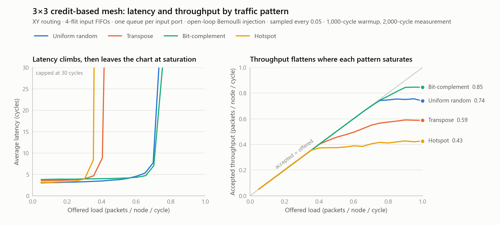
A pencil-and-paper model predicts both numbers. It routes every source and destination pair with XY routing, adds up the traffic on each channel and each ejection port, and takes the bound as one over the heaviest load, since nothing carries more than one flit per cycle.
| Pattern | Zero-load latency, model / measured | Saturation bound | What sets the bound | Measured |
|---|---|---|---|---|
| Uniform random | 3.00 / 3.01 | 1.00 | Each tile's own injection and ejection port; the busiest channel carries only 0.75 of the injected load | 0.70 to 0.75 |
| Transpose | 3.44 / 3.49 | 0.44 | Corner channels (0,0)→(0,1) and (2,2)→(2,1) carry 2.25 times the injection rate | 0.40 to 0.45 |
| Bit-complement | 3.83 / 3.80 | 0.73 | The center router's east and west outputs carry 1.375 times the rate | 0.70 to 0.75 |
| Hotspot | 3.06 / 3.09 | 0.36 | Tile (0,0)'s single ejection port receives 2.75 times the rate | 0.35 to 0.40 |
Zero-load latency matches the model to within 0.05 cycles for every pattern. Three of the four patterns saturate exactly where the wiring says they must, which means for those patterns the router is not the bottleneck: the topology is.
Nothing in the topology stops uniform traffic before 1.0, yet it saturates at 0.70 to 0.75. At 0.75 offered load the busiest channel is only 56% utilized. The mesh has link bandwidth to spare and the router fails to use it. The cause is head-of-line blocking (Section 3.5).
Is it just the buffers? The obvious first suspect was buffer depth. The sweep was rerun with every input FIFO doubled to 8 flits:
| Input FIFO depth | Average latency at 0.75 offered | Accepted at 0.80 offered | Peak accepted |
|---|---|---|---|
| 4 flits | 43.2 cycles | 0.747 | 0.756 |
| 8 flits (twice the storage) | 9.5 cycles | 0.793 | 0.811 |
Twice the storage buys 7% more peak throughput and leaves most of the gap in place. A deeper FIFO holds more waiting flits but does not let any jump the queue. The fix is more queues, which is M5.
Past saturation, the backlog moves to the network's edge. At 1.0 offered load, uniform network latency plateaus near 10 cycles because the mesh is full but still moving, while total latency reaches 714 cycles because the excess waits in the source queues.
A script copies the RTL, plants one realistic bug at a time and requires a testbench to fail. The unmutated RTL goes through the same harness first and must pass, otherwise a broken harness would "catch" everything. The three mutants each need a different kind of check:
| Mutant | Bug planted | Caught by, and why the others miss it |
|---|---|---|
credit_overflow | Credit counters reset one too high | The credit-bound invariant, on the first cycle after reset. Nothing overflows until a buffer fills, so the scoreboard sees nothing at light load. |
fixed_priority | The round-robin pointer never advances | The bounded-wait invariant. Every packet still arrives intact, only unfairly; no data check can see unfairness. |
route_east_west | East-bound packets routed west | The scoreboard and drain check: packets pile against the mesh edge and never arrive. The invariants cannot see it. |
Data checks catch wrong answers; embedded invariants catch wrong behavior that has not yet produced a wrong answer.
Hotspot traffic first produced scoreboard failures that looked exactly like a router data-integrity bug. Chasing it took five steps, each ruling something out.
The RTL was correct the whole time. A testbench that tracks protocol state needs the same care against races as the design it tests.
This Icarus build also cannot parse concurrent assertions (property and assert property), so credit conservation and starvation freedom are implemented as immediate assertions plus a procedural bounded-wait counter. M7 later proves the same properties formally.
M4 found that uniform traffic saturates at 75% of what the wiring allows, and that deeper buffers barely help. M5 removes head-of-line blocking with virtual channels, then uses the same mechanism to remove a second, nastier problem that M4's traffic could not show: protocol deadlock.
NUM_VNS × VCS_PER_VN independent FIFOs, numbered vc = vn × VCS_PER_VN + k. A vc field travels with every flit and picks the FIFO at the far end. Credits are counted per VC, with one counter per output VC and one credit wire per VC.SA_ITERS=2 a second pass repeats both stages for the inputs and outputs the first pass left unmatched. Pass 2 scans in the same order but never moves a round-robin pointer; only pass-1 wins rotate them (the rule from iSLIP, McKeown 1999), so pass 1's fairness bounds still hold.noc_pkg.sv adds message class and sender coordinates here) decides which VN it lives in.req_b, shares the priority pointer without moving it, which is how pass 2 is built.Configured as 1 VN × 1 VC, the new router is behaviorally identical to M4's. The equivalence check proves it (below).
The full study is uniform random traffic, 12 router configurations and 20 offered loads each: 240 runs, all passing every correctness check.
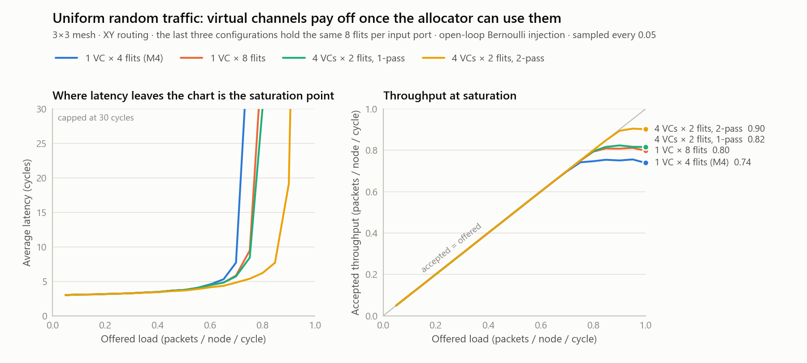
| Configuration | Flits per input | Peak, 1-pass | Peak, 2-pass | Knee, 1-pass | Knee, 2-pass |
|---|---|---|---|---|---|
| 1 VC × 4 flits (M4's router) | 4 | 0.756 | 0.756 | 0.70 | 0.70 |
| 2 VCs × 2 flits | 4 | 0.772 | 0.822 | 0.70 | 0.75 |
| 1 VC × 8 flits | 8 | 0.811 | 0.811 | 0.70 | 0.70 |
| 2 VCs × 4 flits | 8 | 0.820 | 0.872 | 0.70 | 0.80 |
| 4 VCs × 2 flits | 8 | 0.824 | 0.905 | 0.75 | 0.85 |
| 4 VCs × 4 flits | 16 | 0.840 | 0.926 | 0.75 | 0.85 |
Peak is the highest accepted throughput in flits per node per cycle. The knee is the highest offered load whose average latency stays within three times the zero-load latency.
Virtual channels alone barely help. At 8 flits per input, four VCs (0.824) beat one deep FIFO (0.811) by under 2%. A single-pass allocator makes each input nominate one VC without knowing what the others want. If the nominee loses at the output, the input sends nothing that cycle, even if another of its VCs wanted an output nobody won. The VCs create choices and a one-shot allocator throws most of them away.
A second pass alone does nothing. With one VC the one-pass and two-pass results are bit-identical, because an input with one FIFO has nothing else to offer when its head flit loses.
Together, at equal storage (8 flits per input) four VCs with two passes accept 0.905 against 0.811 for one deep FIFO (+12%) and against 0.756 for M4's router (+20%). The knee moves from 0.70 to 0.85.
The patterns that were never the router's fault did not move. M4's model said transpose, bit-complement and hotspot are limited by the wiring. The best configuration against M4's router confirms it:
| Pattern | What limits it | Knee, M4 to M5 | Peak accepted, M4 to M5 |
|---|---|---|---|
| Uniform random | The router (bound 1.00) | 0.70 → 0.85 | 0.756 → 0.905 |
| Transpose | Two corner channels (bound 0.44) | 0.40 → 0.40 | 0.591 → 0.631 |
| Bit-complement | Center router's E and W outputs (0.73) | 0.70 → 0.70 | 0.847 → 0.847 |
| Hotspot | Tile (0,0)'s ejection port (0.36) | 0.35 → 0.35 | 0.428 → 0.431 |
A better router cannot beat the wiring. It can only stop wasting it, and the improvement lands exactly where M4's model said the waste was.
What it costs. With several VCs per network a later packet can take a less crowded VC and overtake an earlier one, so point-to-point ordering is no longer guaranteed: at the best configuration 0% of packets reorder at 0.5 offered load, 2.2% at 0.8 and 9.6% at 0.9. A protocol class needing order would get a single VC in its network. The allocator also does more work per cycle, and how much that stretches the clock is a synthesis question, answered in M7.
The protocol testbench gives every tile the three roles of a coherence agent (Section 3.6). Each requester may have up to OUTSTANDING transactions in flight, and every message is checked on arrival: right destination, right network for its class, true source coordinates, and it is the message its transaction is actually waiting for.
With all three classes sharing buffers, the testbench reports the deadlock and where every stuck message is. In the run with 16 outstanding transactions, 40 REQs, 29 SNPs and 24 RSPs sit in router buffers, and every tile with a message at the head of its receive queue is waiting on an out-queue that is full. The most telling number is the 24 RSPs: each would complete a transaction the instant it arrived, since requesters always accept them, and none can move because they share FIFOs with REQs and SNPs waiting on each other.
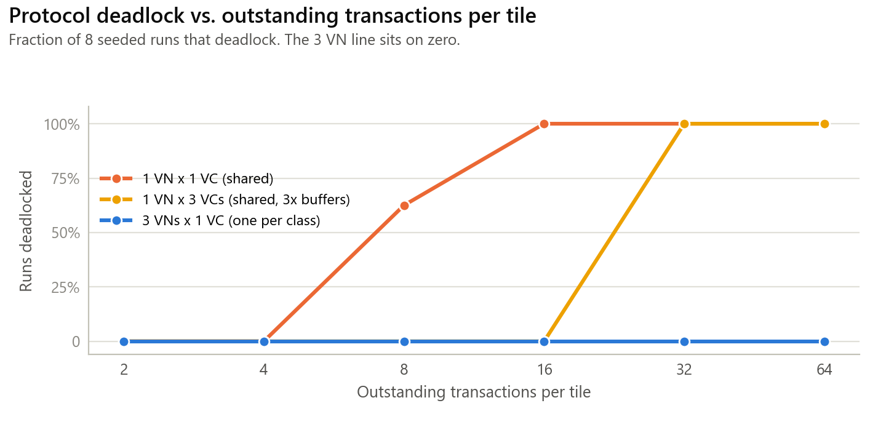
| Outstanding per tile | 1 VN × 1 VC (shared) | 1 VN × 3 VCs (shared) | 3 VNs × 1 VC (per class) |
|---|---|---|---|
| 2 and 4 | 0/8 | 0/8 | 0/8 |
| 8 | 5/8 | 0/8 | 0/8 |
| 16 | 8/8 | 0/8 | 0/8 |
| 32 and 64 | 8/8 | 8/8 | 0/8 |
The middle and right columns hold exactly the same number of buffers. Sharing three VCs among all classes only raises the load needed to deadlock; splitting the same three buffers by class removes the deadlock completely.
Why virtual networks cannot deadlock. The argument runs from the end of the chain backward: RSPs always drain, because requesters always accept them and the RSP network only holds RSPs, and XY routing cannot deadlock within one network. So SNPs always drain, because an owner only waits for RSP queue space, which is guaranteed to come. So REQs always drain, because a home only waits for SNP queue space.
At 2 or 4 outstanding transactions the shared design passes every test. A regression that only runs light traffic would ship it. The bug exists only where the load is high enough to fill the buffers, which is why the study sweeps load and does not spot-check.
Equivalence with M4 is the strongest single check. The M5 router configured as M4's (1 VN × 1 VC × 4 flits, 1-pass) is driven with M4's exact stimulus, and all 80 sweep points match digit for digit: every latency average, percentile and throughput figure. The refactor changed no timing and no arbitration decision anywhere. A 3-VN router with traffic in only one network also matches, so idle networks do not perturb the active one.
| Test | Checks |
|---|---|
| T1 | Routing to all five ports; each class leaves on its own network's VC; every credit returns on the right VC wire |
| T2 | Head-of-line blocking: a 1-VC router strands a flit behind a blocked one; a 2-VC router, same stimulus, sends it around |
| T3 | Network isolation: with East's REQ VC jammed, an RSP to East from the same input still goes straight through |
| T4 | Output-VC choice: round-robin within the network, a stalled VC is skipped, a VC of another network is never used |
| T5 | Two-pass allocation: an input that loses pass 1 sends on another VC in the same cycle (one pass: two cycles later) |
| T6 | Fairness: four inputs streaming to one output receive near-equal grants |
| T7 | The network-isolation checker fires on a flit deliberately injected into the wrong network |
| Invariant | Location |
|---|---|
| FIFO occupancy never exceeds capacity | flit_fifo |
| No push into a full buffer (a sender without credit) | flit_fifo |
| Credit count never exceeds buffer depth, per output VC | vc_router |
| A flit enters only a VC of its own class's network | vc_router |
| A flit names a VC that exists | vc_router |
| Every sending output was given an output VC | vc_router |
| An output takes at most one input; an input feeds at most one output | vc_router |
| Output-stage fairness: a continuous requester waits at most NUM_PORTS−1 grants | vc_router |
| Input-stage fairness: an eligible VC sees at most NUM_VCS−1 pass-1 wins by its siblings | vc_router |
| No flit ever leaves through an edge port (that would be a misroute) | vc_mesh |
Both fairness bounds are exact consequences of the round-robin pointer rules, so they are tight checks and not generous timeouts. They hold with the two-pass allocator too, because pass 2 never moves a pointer.
| Mutant | Bug | Caught by |
|---|---|---|
credit_overflow | Credit counters reset one above capacity | Credit-bound invariant, all testbenches |
fixed_priority | Round-robin pointers never advance | Both fairness invariants; test T4 |
route_east_west | East-bound flits routed west | Edge-misroute invariant; test T1 |
vn_escape | Output-VC allocation ignores the network | Network-isolation invariant (protocol run); test T3. The sweep cannot see it: its traffic is one class. |
credit_wrong_vc | A pop returns its credit on the neighboring VC's wire | Credit-bound invariant; test T4 |
pass2_reuse_input | Pass 2 lets an input that already won win again | Crossbar-input invariant: one input feeding two outputs |
pass2_reuse_output | Pass 2 may grant an output pass 1 already gave away | Crossbar-output invariant: two inputs on one output |
Two points are general. vn_escape is invisible to single-class traffic: a bug is only found if the stimulus can reach the logic that has it. And the two pass-2 mutants would otherwise surface as lost or duplicated flits somewhere downstream, eventually; the crossbar invariants name the exact router and cycle instead. One draft mutant, pass2_double_grant, was dropped after it turned out to be equivalent: another filter already blocked the case, so the bug could never occur. A surviving mutant is either a verification gap or logic that was redundant, and this one was redundant.
Show what a single compromised tile can do to a shared fabric, demonstrate each attack succeeding against M5's router, then stop it with the smallest possible hardware at the one place it can be stopped.
Every defense sits at each router's local port, where a tile meets the network. Links between routers stay trusted. That split changes what an assertion means: on a link, a flit in the wrong network can only come from a broken router upstream, so it is an RTL bug and an assertion; at the local port the same flit is an attack, so the router refuses it and raises an alarm. All of it is behind one parameter, SECURE; SECURE=0 builds M5's behavior, the vulnerable baseline every attack is shown against.
Setup. Homes enforce an access-control list: a protected transaction may only be served for a trusted tile (the top row), and the home reads the requester's identity from the flit's source field.
Attack. The attacker at tile (2,2) sends protected requests with the source field set to (0,0), a trusted tile. Against M5's router every forged request is served, and the impersonated tile is hit with responses it never asked for. This is the on-chip version of a reflection attack: the attacker cannot read the data, but it can make the system act for it and dump the results on someone else.
Defense. The router overwrites the source field with its own coordinates on every flit entering from the tile. A tile may claim anything; the network reports where the flit really came from. This is ingress filtering in the manner of BCP 38, done in hardware at the only place it can be, and it is the principle behind hardware-assigned initiator identities in real SoC fabrics.
| Router | Runs breached | Forged requests served | Denied | Unsolicited responses at (0,0) | Honest completed |
|---|---|---|---|---|---|
M5 behavior (SECURE=0) | 8/8 | 22,685 | 0 | 22,664 | 100% |
M6 (SECURE=1) | 0/8 | 0 | 26,391 | 0 | 100% |
Honest traffic is unaffected either way, which is exactly what makes spoofing dangerous: nothing looks wrong until someone audits the access log.
M5's deadlock argument assumes the response network holds only responses. The attack: a greedy tile notices the response network is less congested and puts its requests there. A REQ can now sit at the head of a home's RSP buffer, waiting for room to queue a SNP, and every RSP behind it waits too. The first step of M5's argument is gone and the cyclic wait from the shared-buffer case returns. Against M5's router this deadlocks the whole fabric in every run, at a load where the networks never deadlocked before. One misbehaving tile takes the guarantee away from everyone.
Defense. At the local port a flit is accepted only into a VC of its own class's network. Otherwise it is refused and an alarm pulses. The credit the tile spent on it is not returned, so a rule-breaking tile quickly runs out of credits on the VC it abused. It starves only itself.
| Router | Runs deadlocked | Attacker flits refused | Honest completed |
|---|---|---|---|
| M5 behavior | 8/8 | 0 | 91.4%, then nothing moves |
| M6 | 0/8 | 32 (4 per run: its credits ran out) | 100% |
The attack. The attacking tile simply stops consuming what is delivered to it. Its ejection credits never return, so flits addressed to it wait in its router's buffers; the flits behind them, addressed to anyone, wait too because of head-of-line blocking; and the routers feeding those buffers back up the same way. The backpressure spreads (tree saturation) until traffic between tiles that have nothing to do with the attacker is frozen. A corner tile does it as thoroughly as the center.
Defense. Per virtual network, the local ejection port runs a watchdog. It counts consecutive cycles in which a flit is waiting for the tile and the tile has returned no credit. After WD_LIMIT cycles it quarantines that network: its flits still win the switch but are discarded instead of sent, which drains the router's buffers and unwinds the backpressure. The moment the tile returns any credit, quarantine lifts. A slow but live tile never trips it, because any credit resets the count, and the discarded flits were addressed to the tile that refused them.
| Attacker | Load | Router | Victims accepted / offered | Victim packets lost | Stuck at end | Quarantined at cycle |
|---|---|---|---|---|---|---|
| center (1,1) | 0.20 | M5 behavior | 0.022 / 0.178 | 2,802 | 128 | never |
| center (1,1) | 0.40 | M5 behavior | 0.045 / 0.361 | 5,684 | 128 | never |
| corner (2,2) | 0.20 | M5 behavior | 0.022 / 0.177 | 2,776 | 128 | never |
| corner (2,2) | 0.40 | M5 behavior | 0.044 / 0.360 | 5,687 | 128 | never |
| center (1,1) | 0.20 | M6 | 0.178 / 0.178 | 0 | 0 | 311 |
| center (1,1) | 0.40 | M6 | 0.361 / 0.361 | 0 | 0 | 278 |
| corner (2,2) | 0.20 | M6 | 0.177 / 0.177 | 0 | 0 | 325 |
| corner (2,2) | 0.40 | M6 | 0.360 / 0.360 | 0 | 0 | 286 |
The unprotected network always ends with the same 128 stuck flits: once enough buffers fill with traffic waiting on the black hole, the frozen state does not depend on which tile or load started it.
The limit trades false alarms (quarantining an honest tile that is only legitimately stalled) against the damage window (how long a black hole gets to back traffic up). Honest tiles do stall: a coherence home cannot accept a request until it has room for the snoop it owes. Both sides were measured.
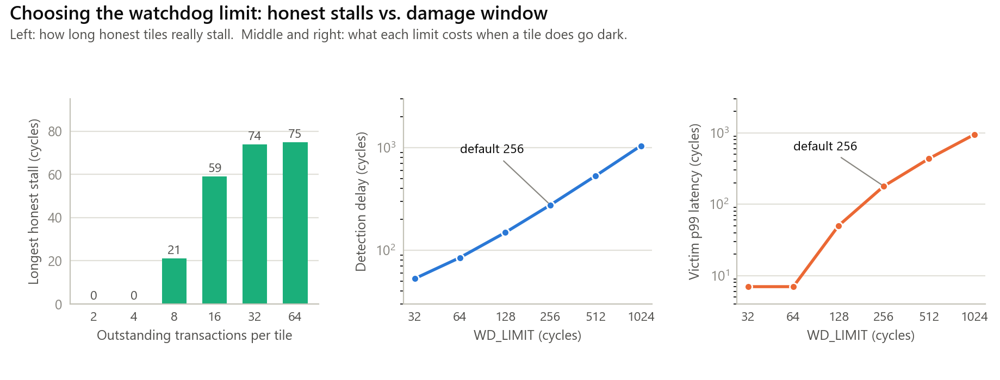
| Watchdog | Detected after (cycles) | Victim latency avg / p99 | Victim packets lost |
|---|---|---|---|
| none (M5's router) | never | n/a | 3,986 |
| WD_LIMIT 32 | 53 | 3.3 / 7 | 0 |
| WD_LIMIT 64 | 85 | 3.4 / 7 | 0 |
| WD_LIMIT 128 | 149 | 4.6 / 50 | 0 |
| WD_LIMIT 256 (default) | 277 | 14.9 / 179 | 0 |
| WD_LIMIT 512 | 533 | 66.1 / 436 | 0 |
| WD_LIMIT 1024 | 1,045 | 295.9 / 946 | 0 |
The default is 256: 3.4 times the longest honest stall ever measured, at a load (64 outstanding per requester) far beyond typical miss-handling resources, detecting four times faster than the first choice of 1,024 with five times less tail damage. A design that knows its endpoints better could go to 128, which still has 1.7 times margin.
The watchdog sees one symptom: delivered flits waiting at a tile that returns no credit. A tile that is deadlocked shows exactly that symptom while being honest. If the watchdog runs on the shared-buffer configuration, which deadlocks, it quarantines honest tiles (106 false-positive errors in the reproduced run), the discards free some buffers so traffic limps on, and the network deadlocks again at cycle 3,535 anyway. The watchdog turns deadlock into message loss; it does not cure it. The watchdog assumes a deadlock-free protocol. With one network per message class there is none, and every honest run shows zero alarms. Deadlock freedom has to come from the virtual networks.
The same attacker floods requests in the correct network. Honest traffic slows but completes in every run on both routers. The control shows that the hopping deadlock comes from the network violation and not from the extra load. It also marks the edge of M6: volumetric flooding needs per-tile rate limiting, which is future work.
Security logic that changes how honest packets move is a performance bug, so with no attacker M6 must behave exactly like M5:
| Check | Runs | Result |
|---|---|---|
M4's whole sweep, SECURE=1 and SECURE=0 | 2 × 80 | Identical to M4, digit for digit |
| M5's best VC configuration, 4 patterns | 80 | Identical to M5, every column |
| M5's protocol runs, one network per class (6 loads × 8 seeds) | 48 | Identical to M5; zero alarms |
Every one of these runs also fails on any security alarm, so "no false positives" is checked and not assumed.
The directed suite grows to 28 of 28 checks. New tests include: a wrong-network flit on a router-to-router link still fires the assertion, because links are trusted (T7); a local flit claiming (2,2) leaves stamped (1,1) while a transit flit keeps its source (T8); a local REQ in the RSP VC is refused, one alarm, no assertion, credit kept, while the same REQ in the REQ VC passes (T9); a watchdog with limit 16 tolerates a 12-cycle stall, then quarantines past 16 and discards exactly the two waiting flits, leaves the other network alone, and recovers when the tile resumes (T10); and the same tricks on an unprotected router pass silently, the vulnerability shown directly (T11).
The attack matrix runs every attack against both routers, 8 seeds for the protocol attacks and 2 tiles by 2 loads for the black hole, and passing requires both directions. The mutation test adds four security mutants to M5's seven; all 11 are caught.
| Security mutant | Bug | Caught by |
|---|---|---|
no_stamp | Source stamping removed | Spoofing run: breaches above zero; test T8 |
no_vn_guard | Ingress network check removed | Hopping run: wrong-network flits reach the links and fire the link assertion; test T9 |
no_watchdog | Watchdog never quarantines | Black-hole run: victims stuck; test T10 |
hair_trigger | Watchdog fires after 2 starved cycles, not the limit | Honest protocol runs: false alarms on tiles that never stopped consuming; test T10's short-stall case |
The last mutant matters as much as the first three. A security mechanism with a false-positive bug discards honest traffic, which is a self-inflicted denial of service. It is caught only because two checks look for it: every honest run treats any alarm as a failure, and T10 deliberately stalls a tile for less than the limit.
All of it sits at one port per router. Source stamping turns the 8 source bits into constants. The network guard is a 2-bit compare per local VC gating the FIFO push. The watchdog is, per network, a counter of log2(limit+1) bits (9 bits at 256), a quarantine flop and an override on that network's credit check. Section 5.7 measures it: the secure router is smaller than the unprotected one.
M7 synthesized one router alone and reported its longest path as the critical path. M8 later showed this overstated the timing fixes by about a factor of two (Section 5.8). The behavioral claims (equivalence, formal, mutation) are unaffected. This section reports M7's findings with the corrected whole-mesh timing, and M7's original single-router table is kept, labeled, in Appendix B.
M1 to M6 lived entirely in simulation. M7 puts the design through the tools an RTL team ships with: synthesis onto a real cell library, formal verification, and lint. It asks what each feature costs in silicon, and fixes what synthesis finds.
`ifndef SYNTHESIS, so synthesis sees exactly the hardware.-Wall, on two views (synthesizable, and with checkers) across several configurations, with zero warnings required.63 to 71% of a router's area is flip-flops, almost all of it FIFO storage (5 ports × VCs × depth × 37 bits). Doubling the storage roughly doubles the router. In whole-mesh numbers a single 4-flit queue per input is 25,612 µm² per router and an 8-flit queue is 47,175.
The allocator lengthens the critical path faster than it raises throughput per cycle. On the whole mesh, four VCs with one pass cost +56% in clock period (3.95 to 6.16 ns) for +9% throughput per cycle; the second pass costs another +41% (to 8.66 ns) for another +10%. In flits per node per nanosecond, M5's best router delivers about half of the simple router's. Real VC routers pipeline allocation for this reason, which is what M8 does.
The secure router is smaller than the unprotected one: 3.4% smaller in M7's single-router run and 3.7% smaller in M8's whole-mesh run (58,078 to 55,903 µm² per router, same configuration). Source stamping turns the local port's 8 source bits into constants, so synthesis removes those flops from every local-port buffer slot. That more than pays for the watchdog counters. The other checks sit on the push path and in eligibility logic, off the critical path.
The first synthesis run reported every critical path the same way: starting at an input FIFO's read pointer and running through the router in one cycle, through the read mux, route compute, eligibility, both arbiter stages (twice with two passes), the VC mux and the crossbar. Two pieces of that path were doing work that did not need to be there.
| Fix | Before | After |
|---|---|---|
| Route-at-write | Each input VC computed the XY route of its head flit, a 4-bit compare chain sitting right after the FIFO read mux, on every path. | The router computes the route once, when the flit is written, and stores it as 3 extra bits beside the flit (a side-band on the FIFO). At the head the route is simply read. Same cycle, same decisions, fewer comparators (one per input port, not per VC), for 3 bits of storage per slot. |
| Masked round-robin arbiter | M1's arbiter found the winner with a loop of variable rotations, a chain of barrel shifters, and a router has 15 arbiters. | The textbook form: a thermometer mask of positions at or above the pointer, grant the lowest set bit of (requests AND mask) if any, else the lowest set bit of requests. The lowest set bit of x is x AND (NOT x + 1). |
A third change came from a synthesis warning: each FIFO's storage array shared the pointers' asynchronous-reset block without being reset, which asks for reset flops that never receive a reset value. Storage now has its own block with no reset, because an empty FIFO's contents are irrelevant, and non-reset flops are smaller.
On the whole mesh the two fixes cut the critical path 17% for the simple router (4.95 to 4.13 ns) and 13% for the VC router (10.10 to 8.79 ns). The mesh as a whole also shrank by about half in area after M7's changes (per router, simple: 52,505 to 25,693 µm²; VC two-pass: 98,964 to 54,575). The largest contributor is very likely the reset-free storage, since flops with reset are larger, but the project did not isolate it, so this is an observation and not an attributed result.
None of it changed behavior, and that is proved: all 288 honest-traffic runs reproduce M4's and M5's results digit for digit; all 56 attack runs reproduce M6's line for line; and the new arbiter is formally equivalent to the old one (next).
Simulation checks the traffic that ran. Formal verification checks every possible input sequence: the solver either finds a counterexample or proves none exists.
| Proof | What is established, and how |
|---|---|
| Arbiter equivalence, N = 1 to 8 | The new arbiter and the original run side by side from reset on free inputs and must give identical grants every cycle. The only state is the priority pointer and every reachable pointer value is reached one cycle after reset, so bounded checking is a complete proof here. A first attempt with a register-cut equivalence tool "failed": it considered pointer values that can never occur, on which the two legitimately differ. Choosing the right proof matters. |
| Arbiter properties, N = 1 to 8 | Concurrent assertions (the construct Icarus cannot parse), proved by k-induction, which is unbounded. P1: a grant only goes to a requester. P2: at most one grant. P3: if anyone requests, someone is granted. P4: the same three for pass 2. P5, fairness: a requester that keeps asking is granted within N cycles, now proved for every request pattern and not only the traffic that ran. |
| Router credit protocol | One router sits in a harness that models its neighbors as assumptions (an upstream sender only sends with a credit; a downstream receiver only returns a credit for a flit it holds). The router's obligations are assertions. C1: never send into a full buffer. C2: never return a credit it does not owe. C3: every flit leaves on a real VC. C4: every flit leaves in its own class's network. Bounded to 12 cycles, enough to fill and drain every 2-deep buffer several times, in two configurations. |
The first run of C4 failed. The solver sent a request-class flit into the response VC over the west link and the router forwarded it. The router was not wrong: the harness had not said that neighboring routers keep network discipline, which is M6's trust model, where links are trusted and only the local port faces an untrusted tile. Adding it as an assumption on the four link ports, and deliberately not on the local port, made C4 pass. The proof now establishes exactly what M6 claimed: no flit leaves outside its network, even when the local tile sends anything at all.
| Planted bug | Proof | Result |
|---|---|---|
| Priority mask off by one | Arbiter equivalence | FAIL, with a counterexample trace (as required) |
| Pointer never advances (fixed priority) | Fairness P5 | FAIL: requester 4 starves (as required) |
| Credits reset one too high | Credit protocol C1 and C2 | FAIL (as required) |
| VC allocation ignores the network | Network isolation C4 | FAIL (as required) |
Verilator reports zero warnings on both views. Two global waivers were forced by the toolchain (file-scope package imports, because module-header imports crash this Icarus build, and a file-naming style rule). Every other waiver sits inline next to its line with the reason: an unused FIFO-full flag that credits make redundant, the tile's source bits discarded when stamping, constant compares on edge routers, an unused pass-2 port, and package constants used only by testbenches. Real width mismatches were fixed with typed constants, and two encoders written as chained ORs, which Verilator flagged as false combinational loops, became flat one-hot-to-binary encoders.
M7 found that a single-cycle VC router loses per nanosecond to the simple router, and named the fix: split the hop into stages. M8 builds it, re-measures timing honestly, and turns the data into a decision rule.
A PIPE parameter selects the hop structure. PIPE=0 builds M7's router unchanged, and the equivalence check confirms it still reproduces M4's and M5's results exactly.
A hop does not end at a router's output port. It ends in the next router's input buffer, in the same clock cycle. Synthesized alone, a router's ports are free endpoints and that cross-link path is cut in half. M8's synthesis script flattens the whole 3×3 mesh, so the only endpoints are the tiles' ports, and reports where the critical path starts and ends. The single-cycle routers' paths now visibly cross a link: they start in one router (a FIFO head or a credit counter) and end in a neighbor's input logic.
| Critical path, M6 RTL to M7 RTL | One router (M7's method) | Whole mesh (M8) |
|---|---|---|
| 1 VC × 4 | 5.45 → 3.62 ns (−34%) | 4.95 → 4.13 ns (−17%) |
| 4 VCs × 2, 2-pass | 10.56 → 8.15 ns (−23%) | 10.10 → 8.79 ns (−13%) |
Most of the gap is route-at-write. In a single-cycle router it does not remove the route compare from the cycle; it moves it from the start of the path (this router reading its head) to the end (the next router writing the flit), and the one-router measurement stopped before the end. The arbiter rewrite is the real gain there. In the two-stage router route-at-write does pay, because the compare moves out of the allocation stage, which is now the bottleneck.
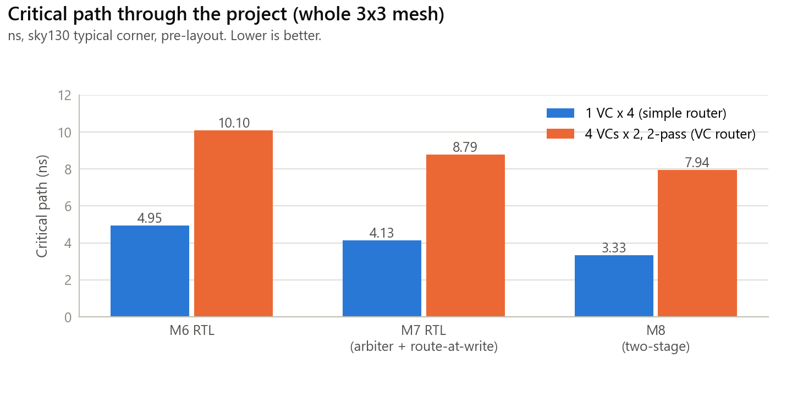
Peak accepted throughput is from the uniform-traffic sweeps (single-cycle: M5's 240 runs; two-stage: 80 runs, all correct). Critical paths are whole-mesh.
| Router | Stages | Critical path | Peak (flits/node/cycle) | Flits/node/ns | Zero-load latency |
|---|---|---|---|---|---|
| 1 VC × 4 (M4) | 1 | 3.95 ns | 0.756 | 0.191 | 3.0 cycles |
| 1 VC × 4 | 2 | 3.33 ns | 0.737 | 0.221 | 6.0 |
| 1 VC × 8 | 1 | 5.06 ns | 0.811 | 0.160 | 3.0 |
| 1 VC × 8 | 2 | 3.97 ns | 0.804 | 0.203 | 6.0 |
| 4 VCs × 2, 1-pass | 1 | 6.16 ns | 0.824 | 0.134 | 3.0 |
| 4 VCs × 2, 1-pass | 2 | 5.35 ns | 0.820 | 0.153 | 6.0 |
| 4 VCs × 2, 2-pass (M5's best) | 1 | 8.66 ns | 0.905 | 0.105 | 3.0 |
| 4 VCs × 2, 2-pass | 2 | 7.94 ns | 0.901 | 0.113 | 6.0 |
| 3 VNs × 1 VC × 4, secure (coherence router) | 1 | 5.85 ns | n/a | n/a | n/a |
| 3 VNs × 1 VC × 4, secure | 2 | 5.32 ns | n/a | n/a | n/a |
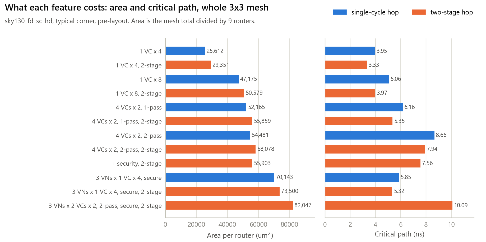
Pipelining helps the simple router most (3.95 to 3.33 ns, −16%) and the VC router least (8.66 to 7.94 ns, −8%). The critical path after pipelining, for the VC routers, starts at a credit counter and ends at the VC mux that feeds the stage register: credit check, eligibility, input arbiter, output arbiter, the same two again for pass 2, winning VC, VC mux. That is allocation itself, which a two-stage split cannot touch.
A chip's clock is set by its cores and caches; the router has to meet it. For each design, if its critical path fits the clock period it delivers its peak throughput divided by that period, and if not it cannot be used. Plotting that for every period shows which design wins where.
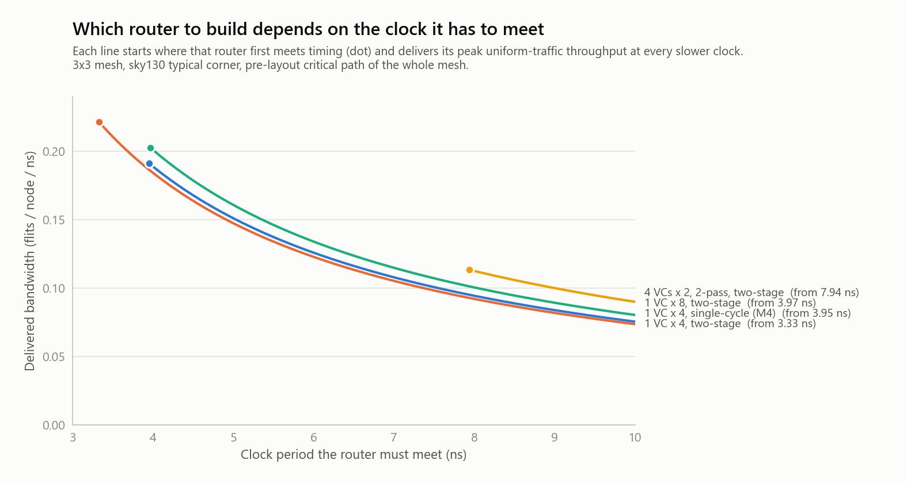
| Clock period to meet | Best design | Bandwidth | Why |
|---|---|---|---|
| 3.33 to 3.95 ns | 1 VC × 4, two-stage | 0.737 | The only design that fits |
| 3.97 to 5.35 ns | 1 VC × 8, two-stage | 0.804 | Deeper buffers beat VCs once they fit: +9% over 1 VC × 4 |
| 5.35 to 7.94 ns | 4 VCs × 2, 1-pass, two-stage | 0.820 | Only +2% over 1 VC × 8, which is within noise. The 1 VC × 8 single-cycle router (0.811, fits from 5.06 ns) has half the latency, so it is the practical pick. |
| 7.94 ns and slower | 4 VCs × 2, 2-pass, two-stage | 0.901 | Fits at last: +12% over 1 VC × 8, +22% over 1 VC × 4 |
| 8.66 ns and slower | 4 VCs × 2, 2-pass, single-cycle | 0.905 | Same bandwidth, half the hop latency |
When latency matters as much as bandwidth, the single-cycle variant of whichever design fits is the better pick: half the zero-load latency for a few percent of bandwidth. Virtual networks are not part of this trade. Coherence needs them for deadlock freedom at any clock, and their cost shows in the 3-VN rows above.
What would change the answer. The data says how much each next step must deliver. To beat the two-stage 1 VC × 8 router's 0.203 flits per node per ns, the 4 VC two-pass router would need a clock period under about 4.4 ns, and the one-pass version about 4.0 ns: roughly half of today's numbers. The known routes are speculative switch allocation, allocation split across two cycles with replay, and a wavefront allocator. Each is a project on its own.
Everything above was measured on 3×3. The RTL has no 3×3 assumption: mesh size is a parameter and coordinates are 4 bits. The testbenches take the mesh size as a macro (default 3), and a study script reruns the key checks on 4×4 with two-stage routers. It compares the sweeps with a first-principles model: zero-load latency is (average hops + 1) routers × 2 stages, and the saturation bound comes from the busiest channel's load.
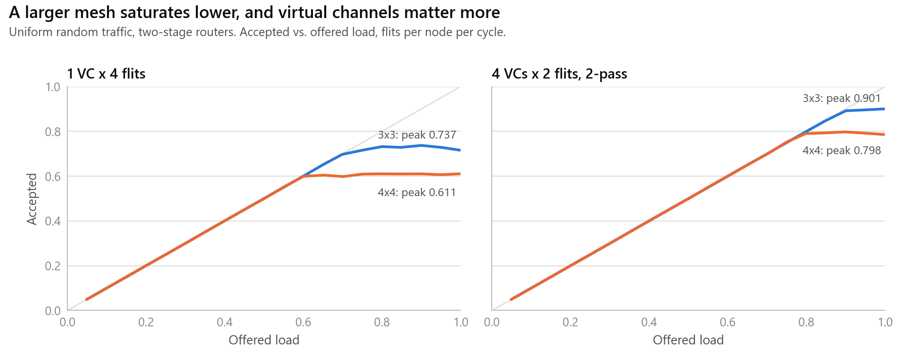
| Router | Mesh | Latency at 0.05 load (model) | Peak accepted | Bound | % of bound |
|---|---|---|---|---|---|
| 1 VC × 4 | 3×3 | 5.98 (6.00) | 0.737 | 1.000 | 74% |
| 1 VC × 4 | 4×4 | 7.46 (7.33) | 0.611 | 0.938 | 65% |
| 4 VCs × 2, 2-pass | 3×3 | 5.98 (6.00) | 0.901 | 1.000 | 90% |
| 4 VCs × 2, 2-pass | 4×4 | 7.46 (7.33) | 0.798 | 0.938 | 85% |
| Check | PIPE=0 | PIPE=1 |
|---|---|---|
| Directed tests (28) | 28 / 28 | 28 / 28 |
| Equivalence with M4 and M5, 288 runs | identical | latency differs by design |
| Throughput sweeps, uniform | M5's 240 points | 80 points, all correct |
| Attack matrix | identical to M6 | every attack contained |
| Mutation test, 11 mutants × 6 runs | all caught | all caught |
| Formal credit protocol C1 to C4 | proved (bounded) | proved (bounded), two configurations |
| Lint | 0 warnings | 0 warnings |
run.sh | 15 / 15 steps, both modes | |
Directed test T6 (fairness) required each of four inputs to win at least 9 grants in a fixed window. With two stages the credit loop is three cycles and a 2-deep buffer accepts only two flits per three cycles, so total throughput dropped and every input won 8 or 9. Fairness itself was intact: shares were within one of each other. The test had been asserting an absolute count, a throughput number, when the property it names is fairness. It now checks what it claims: even shares, nobody starved.
Numbers and tables show that the design works. A replay shows how. The visualizer plays back real simulations of the final router on the 3×3 mesh, one clock cycle at a time, in three scenarios. Nothing on the page is animated by a model of the router: every flit position comes from a waveform the RTL produced in Icarus.
The checker rejects the data unless: a flit sent on a port at cycle c sits in the neighbor's opposite input, same VC, at cycle c+1 (about 10,700 handoffs across the five replays); every flit is ejected at its destination tile; every hop follows XY order and complete routes are minimal; no flit ever sits in a VC outside its class's network; and no FIFO exceeds its depth.
Building it exposed two decoder bugs, both caught by the checker and not by eye. VCD vectors drop leading zeros, so signal widths must come from the declarations and not from the value strings. And FIFO storage has no reset, so unwritten slots hold X, and decoding a whole buffer at once let a single X slot hide every valid flit; each slot is now decoded on its own.
| Scenario | Left | Right | What to watch |
|---|---|---|---|
| Uniform traffic | 4 VCs × 2, 2-pass, hardened, two-stage, 0.40 flits per node per cycle | XY routes, VCs passing each other, about 6.5-cycle latency | |
| Protocol deadlock | All classes share one network | One network per class | Left freezes for good after cycle 211; right keeps completing transactions |
| Black-hole attack | Unprotected; tile 4 stops consuming at cycle 1000 | Hardened | Left backs up permanently; right quarantines tile 4 at cycle 1302 and recovers |
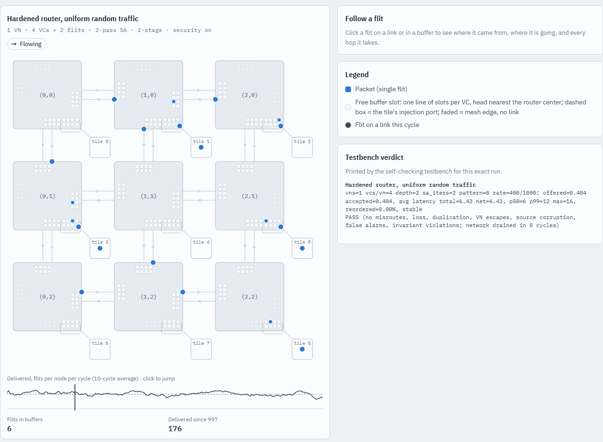
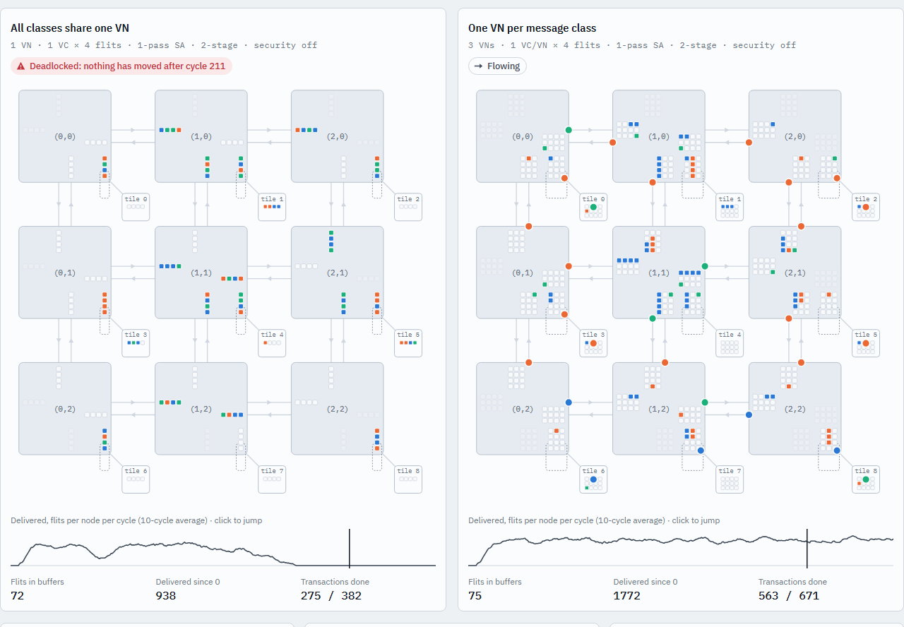
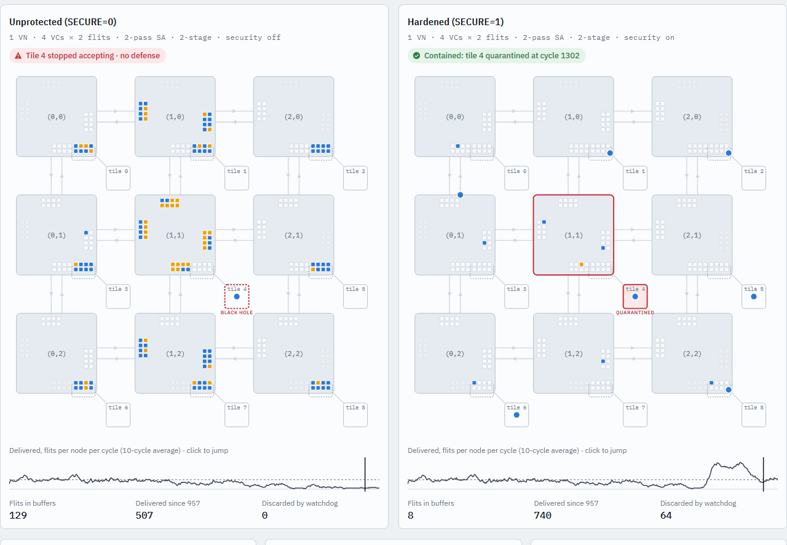
The deadlock pair runs with the watchdog off for the reason given in Section 5.6: a deadlocked honest tile looks identical to a black hole, so with the watchdog on the shared-buffer mesh would quarantine honest tiles. The page opens from disk with no server, supports deep links to a scenario and cycle, and has playback controls, a scrubber, per-flit tracing and tooltips.
This chapter specifies the router as it stands at the end of M8: m8_pipeline/rtl/, five files and 1,339 lines. It is a description of what was built, written from the RTL and its comments. A formal hardware specification (HAS) and micro-architecture specification (MAS) are planned as separate documents; this chapter is the content they will start from.
| File | Lines | Contents |
|---|---|---|
noc_pkg.sv | 104 | Flit type, port and message-class constants, vn_of(), and the simulation-only violation counters |
rr_arbiter.sv | 97 | Masked round-robin arbiter with a second, pointer-neutral request port |
flit_fifo.sv | 97 | Circular-buffer FIFO with a side-band tag, reset-free storage, overflow checker |
vc_router.sv | 827 | The router: input buffering, route tags, eligibility, two-pass switch allocation, VC allocation, datapath, optional pipeline stage, credits, local-port security, invariants |
vc_mesh.sv | 214 | A MESH_W by MESH_H grid of routers wired by constant slices, with an edge-misroute check |
| Signal | Dir. | Width | Meaning |
|---|---|---|---|
clk, rst_n | in | 1 | Clock; asynchronous active-low reset for control state |
in_valid | in | 5 | A flit arrives on this port this cycle |
in_vc | in | 5 × 3 | VC the arriving flit goes into; the sender holds a credit for it |
in_data | in | 5 × 34 | The arriving flit |
in_credit_return | out | 5 × NUM_VCS | One-cycle pulse on wire [p·NUM_VCS + v] when VC v of input p frees a slot |
out_valid | out | 5 | A flit leaves on this port this cycle |
out_vc | out | 5 × 3 | The output VC the flit was allocated |
out_data | out | 5 × 34 | The leaving flit |
out_credit_return | in | 5 × NUM_VCS | Downstream returns a credit for output VC w of port o on wire [o·NUM_VCS + w] |
alarm | out | 3 | All zero when SECURE=0. [0]: pulse, a local flit was refused at ingress. [1]: level, the local ejection port is quarantined. [2]: pulse, a flit for the quarantined tile was discarded. |
Port numbers are N=0, S=1, E=2, W=3, local=4. Row numbers grow downward, so a larger Y is south. VC numbering is vc = vn × VCS_PER_VN + k, so with three networks of two VCs, REQ owns VC0 and VC1, SNP owns VC2 and VC3, RSP owns VC4 and VC5.
vc_mesh exposes, per tile (index y × MESH_W + x), the local port's input and output (valid, VC, flit, credit wires) and a 3-bit alarm vector, tile_alarm. Router-to-router links are constant-slice assigns: router (x,y)'s south output feeds router (x,y+1)'s north input, and credit wires run the opposite way. Boundary ports are tied off, and an assertion fires if a flit ever leaves through one.
| Parameter | Default | Legal values | Meaning |
|---|---|---|---|
X_ID, Y_ID | 0, 0 | 0 to 15 | This router's mesh coordinates (set per instance by the mesh) |
MESH_W, MESH_H | 3, 3 | 1 to 16 | Mesh dimensions, vc_mesh only |
NUM_VNS | 1 | 1 or 3 | Virtual networks: 1 means all classes share, 3 means one per message class |
VCS_PER_VN | 1 | NUM_VNS × this ≤ 8 | VCs inside each network |
BUFFER_DEPTH | 4 | ≥ 1 | Flits per VC buffer, and each output VC's initial credit |
SA_ITERS | 1 | 1 or 2 | Switch-allocation passes per cycle |
SECURE | 1 | 0 or non-zero | Harden the local port. 0 builds M5's behavior, the vulnerable baseline. |
WD_LIMIT | 256 | ≥ 1 | Cycles of ejection starvation before quarantine |
PIPE | 0 | 0 or 1 | 0: one cycle per hop. 1: two stages per hop. |
Illegal combinations stop the simulation with a CONFIG ERROR message. Those checks are simulation-only and sit behind `ifndef SYNTHESIS.
The RTL is organized as numbered steps. In PIPE=0 everything from step 1 to step 6 happens in one clock cycle, and a flit allocated in a cycle appears at the neighbor's FIFO at the next clock edge.
A flit is pushed into the FIFO that its link-level vc names. On the local port with SECURE=1 two rules apply first (Section 6.7). The XY route is computed here, once per input port from the destination and the router's own coordinates, and stored in a 3-bit tag beside the flit. Storage is 37 bits per slot (34 flit bits and the tag).
At the head of each FIFO the route is simply read from the tag. This is route-at-write (M7): the same decision in the same cycle, with one comparator per port in place of one per VC.
Input VC I requests output o if its FIFO is not empty, its route tag selects o, and output o has at least one free slot in some VC of the flit's own network. A flit's network is simply which VC it sits in; the isolation checks keep that true.
SA_ITERS=2). Inputs and outputs left unmatched repeat both stages, using the second request port of the same arbiters. This pass never moves a pointer.Each input port has exactly one crossbar input. Its VC mux selects the VC that won in pass 1 or pass 2, and that VC pops. Each output then takes the flit of the input it granted. One flit per input per cycle is therefore a property of the wiring and not only of the allocator, and the structure is cheaper than a flat (ports × VCs)-to-1 mux per output, which would need about twice the mux inputs at four VCs.
Each sending output gives its flit an output VC: round-robin among the VCs of the flit's network that hold credit. Eligibility already guaranteed one exists, so VC allocation can safely come after switch allocation (it could not if packets had several flits).
With PIPE=0 the crossbar and output port use the signals directly. With PIPE=1 stage 1 ends in a register holding, per output, the flit, the crossbar select and the output VC (plus a valid bit and the watchdog's discard flag), and stage 2 runs the crossbar and link from those registers. The pop, the credit return upstream, the credit charge and the arbiter updates all happen in stage 1.
BUFFER_DEPTH. A send decrements it; a credit_return pulse on that VC's wire increments it. The counter's width is log2(BUFFER_DEPTH+1) bits.BUFFER_DEPTH. The counter never exceeds the depth, no router sends into a full buffer, and no router returns a credit it does not owe.PIPE=0 a credit is back two cycles after its flit was allocated; in PIPE=1, three. A VC needs a buffer at least as deep as the loop to sustain full link rate, which is why a 2-deep single VC reaches only two thirds of a link in two-stage mode.Both bounds are exact consequences of the round-robin pointer rules, checked every cycle in every router, and proved for arbiters of every width the router uses:
With SECURE=1, three mechanisms act at the local port and nowhere else:
| Mechanism | Behavior |
|---|---|
| Source stamping | On the local input only, the flit's source fields are replaced by the router's own coordinates before the flit is stored. The tile's claimed source is discarded. |
| Network guard | A local flit is accepted only into a VC of its class's network. Otherwise it is refused (alarm[0] pulses), nothing is stored, and the credit the tile spent is not returned. |
| Starvation watchdog | Per network, a counter of consecutive cycles in which a flit waits for the local port and the network has no ejection credit. At WD_LIMIT the network is quarantined (alarm[1] is high): its flits still win the switch but are discarded, each pulsing alarm[2]. Any credit returned lifts quarantine immediately and resets the count. |
Transit flits on router-to-router links are not stamped or guarded, because links are trusted. A wrong-network flit on a link is an RTL bug and fires an assertion. Assertions about link traffic apply only when SECURE is non-zero, since with SECURE=0 the local port is deliberately unchecked and the attack tests need the router to carry the attacker's flits.
vc_mesh instantiates one router per grid position with its coordinates, passes all parameters through, and connects neighbors with continuous assigns between constant slices (no runtime indexing, which this Icarus build mishandles). Vertical links join router (x,y)'s south port to (x,y+1)'s north port; horizontal links join east to west. It adds one invariant: a flit may never leave through an edge port, which would be a misroute.
`ifndef SYNTHESIS. Violations increment a global counter in the package, and every testbench fails if it is nonzero.| Property | Value (3×3, uniform traffic unless stated) |
|---|---|
| Latency per hop, zero load | 1 cycle (PIPE=0) or 2 cycles (PIPE=1); average path 3 routers, so 3.0 or 6.0 cycles |
| Peak throughput, simple router | 0.756 (single-cycle), 0.737 (two-stage) flits per node per cycle |
| Peak throughput, 4 VCs × 2, two-pass | 0.905 (single-cycle), 0.901 (two-stage) |
| Area per router (whole mesh, sky130) | 25,612 µm² (simple) to 82,047 µm² (3 VNs × 2 VCs × 2, two-pass, secure, two-stage) |
| Critical path (whole mesh, pre-layout) | 3.33 ns (simple, two-stage) to 10.09 ns (3 VNs × 2 VCs × 2, two-pass, secure, two-stage) |
| Storage | 5 ports × NUM_VCS × BUFFER_DEPTH × 37 bits per router |
This chapter describes how the project establishes that the router is correct, and how it knows the checks themselves can fail. The approach is layered: each layer finds a different kind of bug, and several layers are aimed at the others.
| Layer | What it catches | Used from |
|---|---|---|
| Directed tests | Specific behaviors and corner cases, stated one at a time, with an expected result. Fast to read and to debug. | M1 |
| Scoreboards | Loss, duplication, misrouting, reordering and data corruption under randomized load, tracked per packet. | M4 |
| Embedded invariants | Wrong behavior that has not yet produced a wrong answer: credit overflow, buffer overflow, network escape, starvation, edge misroute. Active in every run of every testbench. | M4 |
| Analytic models | Throughput above a physical bound, or latency that disagrees with the hop count. These expose a whole class of errors that no individual check names. | M4, M8 |
| Equivalence runs | Any change in behavior caused by a refactor or by a feature that should be invisible, down to every latency percentile. | M5 |
| Attack matrix | Defenses that do not defend and attacks that do not attack. Requires success without the defense and containment with it. | M6 |
| Mutation testing | Checkers that cannot see a bug. Plants known bugs and requires failure. | M4 |
| Formal proofs | Counterexamples that simulation never reaches. Exhaustive within a bound, or unbounded when proved by induction. Carries negative controls. | M7 |
| Lint | Width and sensitivity errors, unintended latches or loops, and mismatches between the simulation and synthesis views. | M7 |
| Replay checker | A visualization that shows something that did not happen. | Visualizer |
| Testbench | Purpose | Main controls |
|---|---|---|
vc_router_tb.sv with router_harness.sv | Directed tests of a single router (28 checks at M8). The harness instantiates a router with chosen parameters and models its neighbors, and several tests replay one stimulus on two configurations side by side (1 VC versus 2 VCs, 1 pass versus 2). | Macro TB_PIPE selects the hop structure |
protocol_tb.sv | A full mesh running the coherence-style protocol. Every tile is requester, home and owner, with two-slot out-queues. Checks every message on arrival, detects deadlock (500 idle cycles) and prints where every stuck message is. Also implements the spoofing, hopping and flood attacks and an access-control list at the homes. | Plusargs +OUTSTANDING, +RATE, +SEED, +CYCLES, +EXPECT_DEADLOCK, +ATTACK, +ATTACKER, +EXPECT_COMPROMISE, +NODUMP; macros PROTO_* |
latency_sweep_tb.sv | One open-loop latency and throughput measurement at a chosen pattern and load, with the four phases of Section 3.8. Each run is also a full correctness run. Implements the black-hole attack. | Plusargs +PATTERN, +RATE, +BLACKHOLE, +BH_START, +EXPECT_COMPROMISE, +NODUMP; macros SWEEP_* |
All are simulation-only, wrapped in `ifndef SYNTHESIS, and each violation increments noc_pkg::assertion_violations. Every testbench fails if the counter is nonzero, so a fired assertion cannot scroll past unnoticed.
| Invariant | Where | Since |
|---|---|---|
| FIFO occupancy never exceeds capacity | flit_fifo | M4 |
| No push into a full buffer (a sender without credit); the flit would be lost | flit_fifo | M5 |
| Credit count never exceeds buffer depth, per output VC | vc_router | M4, per VC in M5 |
A flit arriving on a router-to-router link enters only a VC of its class's network (active when SECURE is non-zero; at the local port the same flit is refused instead) | vc_router | M5 |
| A flit names a VC that exists | vc_router | M5 |
| Every sending output was given an output VC | vc_router | M5 |
| An output takes at most one input; an input feeds at most one output | vc_router | M5 |
| Output-stage fairness: a continuous requester waits at most NUM_PORTS − 1 grants | vc_router | M4, tightened in M5 |
| Input-stage fairness: an eligible VC sees at most NUM_VCS − 1 pass-1 wins by siblings | vc_router | M5 |
| No flit ever leaves through an edge port | vc_mesh | M5 |
Longest honest ejection stall is tracked (wd_max_starve) for the watchdog study | vc_router | M6 |
| Comparison | Runs | Result |
|---|---|---|
| M5 router configured as M4, versus M4's sweep | 80 | Identical, every column. Also a 3-VN router with one class active. |
M6 security layer, no attacker, SECURE=1 and 0, versus M4 | 160 | Identical to M4, digit for digit |
| M6, best VC configuration, four patterns, versus M5 | 80 | Identical to M5, every column |
| M6, protocol runs with one network per class, versus M5 | 48 | Identical, zero alarms |
M7 and M8 (PIPE=0) after timing changes, versus M4 to M6 | 288 | Identical (the M6 total of 160 + 80 + 48) |
Run in the final regression: all three comparisons of the 288-run set pass in about 11 minutes (680 s). The two-stage router (PIPE=1) is not expected to match in latency, since each hop takes an extra cycle by design, and is verified by its own sweeps and the model.
Every attack runs against both routers: spoofing, virtual-network hopping and flooding, 8 seeds each, and the black hole at two tiles and two loads. That is 56 runs per pipeline mode. A passing matrix requires both directions at once: every attack succeeds against SECURE=0 and is contained by SECURE=1, and the flood control harms neither. With PIPE=0 the results files are identical to M6's; with PIPE=1 every attack is contained.
A script copies the RTL, applies one realistic bug, and runs six testbench configurations against the copy. The unmutated RTL goes through the same harness first and must pass. Every mutant must make at least one run fail. All 11 are caught in both pipeline modes.
| Mutant | Bug planted | Caught by |
|---|---|---|
credit_overflow | Credit counters reset one above capacity | Credit-bound invariant, all testbenches |
fixed_priority | Round-robin pointers never advance | Output- and input-stage fairness invariants; directed test |
route_east_west | East-bound flits routed west | Edge-misroute invariant; directed test |
vn_escape | Output-VC allocation ignores the network | Network-isolation invariant (protocol run); directed test |
credit_wrong_vc | A pop returns its credit on the neighboring VC's wire | Credit-bound invariant; directed test |
pass2_reuse_input | Pass 2 lets an input that won in pass 1 win again | Crossbar-input invariant |
pass2_reuse_output | Pass 2 grants an output that pass 1 already gave away | Crossbar-output invariant |
no_stamp | Source stamping removed | Spoofing run (breaches above zero); directed test |
no_vn_guard | Ingress network check removed | Hopping run; directed test |
no_watchdog | Watchdog never quarantines | Black-hole run; directed test |
hair_trigger | Watchdog fires after 2 starved cycles | Honest protocol runs (false alarms); directed test |
The mutation script guards its own patterns: each mutation is applied with a text substitution that must change exactly the intended line, and when an RTL edit later moved a line the guard reported the stale pattern instead of silently running an unmutated copy. (An earlier problem of the same family: Python on Windows wrote carriage returns that made the shell substitutions miss. All files were normalized and the guards added.)
| Proof | Method | Scope and result |
|---|---|---|
| Arbiter equivalence | Bounded model checking (complete here) | New versus original arbiter, N = 1 to 8, identical grants every cycle |
| Arbiter properties P1 to P5 | k-induction (unbounded) | Grant only to a requester; at most one grant; grant if anyone requests; the same for pass 2; fairness within N cycles. N = 1 to 8. |
| Router credit protocol C1 to C3 | Bounded model checking, 12 cycles | Never send into a full buffer; never return a credit not owed; every flit leaves on a real VC. Single-cycle and two-stage, 2 VCs with two passes. |
| Router network isolation C4 | Bounded model checking, 12 cycles | Every flit leaves in its own class's network, even when the local tile sends anything. 3 networks, secure. Single-cycle and two-stage. Link ports assumed trusted; the local port is not. |
| Negative controls (4) | Same proofs on planted bugs | Each must fail: mask off by one, fixed priority, credits reset too high, VC allocation ignoring the network. All four fail as required. |
In total the final regression runs 20 proofs plus 4 negative controls: 16 arbiter proofs (8 equivalence, 8 property sets) and 4 router proofs (two configurations, each in both pipeline modes). The proofs are bounded for the whole router and unbounded for the arbiter. The router proof does not by itself show absence of protocol deadlock, which is established by the argument in Section 5.5 and the simulation sweeps.
Verilator -Wall over both views and several configurations reports zero warnings. Waivers are global only where the toolchain forces them and otherwise inline with a reason (Section 5.7).
./regress.sh --full runs everything above. Each step must print its own testbench's PASS line, and the script exits non-zero if any step does not. The recorded run:
| Step | Result | Time | What it covers |
|---|---|---|---|
| M1 single router | PASS | 0 s | 13 / 13 directed checks |
| M2 mesh | PASS | 1 s | 11 / 11 directed checks |
| M3 flow control | PASS | 0 s | FIFO unit test; 23 / 23 router checks |
| M4 verification | PASS | 21 s | 12 / 12 mesh checks; four traffic scoreboards; one sweep point |
| M5 virtual networks | PASS | 65 s | 17 / 17 directed; protocol with and without VNs |
| M6 security | PASS | 153 s | 28 / 28 directed; honest runs; each attack on both routers (9 steps) |
| M7 synthesis | PASS | 150 s | Lint (0 warnings) and M6's suite on M7's RTL (10 steps) |
| M8 pipeline | PASS | 205 s | Lint and the suite in both pipeline modes (15 steps) |
| Replay data check | PASS | 0 s | Handoffs, routes, networks, depths |
| M8 equivalence | PASS | 680 s | 288 runs identical to M4 and M5 |
M8 attack matrix, PIPE=0 | PASS | 179 s | 56 runs; contained; identical to M6 |
M8 attack matrix, PIPE=1 | PASS | 149 s | 56 runs; contained |
M8 mutation test, PIPE=0 | PASS | 231 s | 11 mutants, all caught |
M8 mutation test, PIPE=1 | PASS | 202 s | 11 mutants, all caught |
| M8 formal | PASS | 336 s | 20 proofs and 4 negative controls |
| M8 synthesis | PASS | 209 s | Whole-mesh sky130 synthesis, all configurations |
| M8 4×4 mesh study | PASS | 310 s | 80 sweep points, protocol, deadlock, black hole on 4×4 |
| Replay regeneration | PASS | 57 s | Five simulations, conversion, check, bundle |
| Total | 18 / 18 | 2,949 s | about 49 minutes |
Stating the limits is part of the evidence.
Chapter 5 presents each result where it was found. This chapter gathers them by question, shows what each feature costs, and, importantly, ties every headline number to the file that holds its data and the command that regenerates it.
| Claim | Value | Data file | Regenerate with |
|---|---|---|---|
| Uniform saturation of the single-queue router | 0.756 | m4_verification/results/latency_sweep.csv | tools/sweep.sh (M4) |
| Doubling buffer depth | 0.811 (+7%) | m4_verification/results/latency_sweep_depth8.csv | DEPTH=8 PATTERNS=0 tools/sweep.sh |
| Throughput bounds by pattern | 1.00, 0.44, 0.73, 0.36 | model in m4_verification/tools/theory_check.py | python tools/theory_check.py |
| VC router peak, uniform | 0.905 | m5_virtual_networks/results/vc_sweep.csv | tools/sweep.sh (M5) |
| Other patterns versus M4's router | table in 5.5 | m5_virtual_networks/results/vc_patterns.csv | tools/sweep.sh |
| Protocol deadlock grid | 8/8 shared; 0/8 VNs | m5_virtual_networks/results/deadlock_demo.csv | tools/deadlock_demo.sh |
| M5 reproduces M4 | 80 / 80 identical | m5_virtual_networks/results/equivalence_1x1x4.csv | tools/equivalence_check.sh |
| Spoofing and hopping matrix | tables in 5.6 | m6_security/results/attack_protocol.csv | tools/attack_matrix.sh |
| Black-hole matrix | tables in 5.6 | m6_security/results/attack_blackhole.csv | tools/attack_matrix.sh |
| Watchdog trade-off | limit 256; longest honest stall 75 | m6_security/results/watchdog_study.csv | tools/watchdog_study.sh |
| Security leaves honest traffic unchanged | 288 / 288 identical | m6_security/results/equiv_*.csv, m8_pipeline/results/equiv_*.csv | tools/equivalence_check.sh |
| Area and critical path, whole mesh | tables in 5.8, App. B | m8_pipeline/results/synth*.csv | tools/synth.sh (M8) |
| Two-stage sweeps | 0.901, 0.737, ... | m8_pipeline/results/sweep_pipe.csv | PIPE=1 tools/sweep.sh |
| Clock-target chart | Figure 5.9 | m8_pipeline/results/clock_study.png | python tools/plot_clock.py |
| 4×4 mesh | Figure 5.10 | m8_pipeline/results/sweep_4x4_pipe.csv | tools/mesh_scaling.sh |
| Formal proofs | 20 proofs, 4 controls | m8_pipeline/formal/ (run directories are regenerated) | tools/formal.sh |
| Replay data | 5 simulations, ~10,700 handoffs | visualizer/data/ | visualizer/tools/make_scenarios.sh |
| Whole regression | 18 / 18 | regress_logs/ | ./regress.sh --full |
The figures in this report are drawn from these same CSV files by docs/report_src/make_figures.py, except Figures 5.1, 5.2 and 5.9, which are the milestones' own plots.
All differences are measured on the whole 3×3 mesh (sky130, typical corner, pre-layout). Throughput is peak uniform accepted load. Critical-path differences under about 0.5 ns are within synthesis noise (logically equivalent designs map up to about 0.5 ns apart).
| Change | Area per router | Critical path | Peak throughput | Latency |
|---|---|---|---|---|
| Deeper buffers: 1 VC × 4 to 1 VC × 8 | +84% | +28% | +7% | same |
| Virtual channels: 1 VC × 4 to 4 VCs × 2, 1-pass (twice the storage per input) | +104% | +56% | +9% | same |
| Second allocation pass: 1-pass to 2-pass, 4 VCs × 2 | +4% | +41% | +10% | same |
| Two-stage hop, simple router | +15% | −16% | −2.5% | ×2 |
| Two-stage hop, VC router with two passes | +7% | −8% | −0.4% | ×2 |
| Security layer (same configuration, two-stage) | −4% | −5% (noise) | unchanged | unchanged |
| Three virtual networks (3 VNs × 1 VC × 4, secure, versus 1 VC × 4) | ×2.7 | +48% | n/a | same |
Read together: buffers and VCs buy bandwidth and cost area almost in proportion; the second allocation pass is nearly free in area but expensive in clock period; pipelining trades latency for clock period and helps the simple router most; security is free. Virtual networks are a correctness requirement for the coherence protocol and cost roughly the storage of the extra classes.
| Question | Answer, with the evidence that carries it |
|---|---|
| Performance. Where does a simple router lose bandwidth, and what fixes it? | It loses it to head-of-line blocking: uniform traffic saturates at 75% of what the wiring allows while the busiest channel is only 56% utilized, and doubling the buffers gains 7%. Four VCs with a two-pass allocator reach 0.905 at equal storage (+12% over one deep queue). Neither change works alone. |
| Correctness. What breaks when message types share buffers? | The coherence protocol deadlocks, with no routing cycle involved: 8 of 8 runs at 16 outstanding transactions per tile, and three times the buffers only moves the cliff to 32. One virtual network per class removes it (0 of 48 runs), by the backward argument RSP, then SNP, then REQ. |
| Trust. What can one bad tile do, and where is it stopped? | It can impersonate another tile (8 of 8 runs breached), deadlock the whole fabric by hopping networks (8 of 8), or freeze unrelated traffic by refusing deliveries (victims at 0.022 of the 0.178 they offer, with 128 flits stuck). Three small mechanisms at the local port stop all three with zero victim packets lost, change nothing for honest traffic across 288 runs, and cost no area. |
| Implementation. What does each feature cost, and what should be built? | See the table above. At a clock under about 4 ns build the pipelined simple router (0.221 flits per node per ns); at about 8 ns or slower build the pipelined 4-VC two-pass router (+12 to +22% bandwidth). The coherence protocol needs virtual networks at any clock. |
A project record that lists only successes is not trustworthy. This chapter collects the defects, wrong turns and corrections found along the way, how each was found, and what it changed. Several of them are the reason a later check exists.
| Where | What happened | How it was found | Outcome and lesson |
|---|---|---|---|
| M1 | Ordinary SystemVerilog constructs crashed or silently misbehaved in the simulator (loops over packed-struct fields, nested loop-indexed compares, an unpacked array of structs as an output port). | Simulation crashes a few clock edges in; an output reading x from outside the module. | Rewrote with generate loops and packed arrays. Rule adopted for the whole project: write the subset that every tool agrees on. |
| M2 | A 4-hop packet arrived in the cycle it was sent. | The mesh testbench's own timing check. | Not a bug but a consequence of M1's combinational design, and the direct motivation for M3. |
| M3 | Every check after the first was one flit out of phase. | Looked like a routing or ordering bug; traced to a polling loop that waited for a clock edge before checking, missing the cycle a cut-through router had already used. | Check first, then wait. A testbench needs a correct model of the design's timing, not just of its function. |
| M4 | Hotspot traffic produced scoreboard failures resembling data corruption. | Five steps: first a real tag-wraparound in the scoreboard, then, with that fixed, signal tracing that showed the testbench's own credit counter losing an update when a send and a credit return coincided. | The RTL was correct. A testbench that tracks protocol state needs the same care against races as the design. Fixed with a single synchronous update. |
| M5 | A draft mutant (pass2_double_grant) survived every test. | Mutation testing. | It was an equivalent mutant: another filter already blocked the case. Dropped. A survivor is either a verification gap or redundant logic. |
| M5 | The shared-buffer design passed every test at 2 and 4 outstanding transactions per tile. | The deadlock study swept load instead of spot-checking. | A light-load regression would ship a deadlocking design. The bug lives where the buffers fill. |
| M6 | A watchdog that fires too early would discard honest traffic. | Planted as the hair_trigger mutant. | Caught only because honest runs treat any alarm as a failure and a directed test stalls a tile for less than the limit. A defense with a false-positive bug is a self-inflicted denial of service. |
| M6 study | In the watchdog study the quarantine happened during the warmup phase, before the measurement window opened. | Reading the study's first results. | The attacker was active from reset. Added a start-cycle control (BH_START) so the attack begins mid-run and detection is measured from a known cycle. |
| M7 | A register-cut equivalence proof of the new arbiter "failed". | The tool reported a mismatch. | It had considered pointer values that can never occur. Replaced with a sequential bounded proof that is complete for this state space. Choosing the proof matters. |
| M7 | The credit-protocol proof of network isolation failed on its first run. | The solver sent a request into the response VC over a west link. | The harness had not stated that neighboring routers keep network discipline. Adding the assumption on link ports only, and not the local port, made the proof state M6's trust model exactly. |
| M7 to M8 | M7's timing numbers were wrong by about 2×. It synthesized one router and called its longest path the critical path. | M8 flattened the whole mesh and found the cross-link path that single-router synthesis cuts in half. | Correction note added at the top of M7's README; claimed gains revised from 23 to 34% down to 13 to 17%. The behavioral claims were unaffected. Measure the thing that determines the clock, not a convenient piece of it. |
| M8 | Directed test T6 failed in two-stage mode. | Inputs won 8 or 9 grants against a threshold of 9. | The test asserted a throughput count when the property it names is fairness. It now checks even shares and no starvation. |
| Visualizer | The first converted replays were wrong: the uniform scenario alone had 731 handoff errors. | The replay checker rejected them, before any page was built. | Two decoder bugs: vector widths inferred from value strings that drop leading zeros, and a whole-buffer decode that one X slot (storage has no reset) turned to zero. The checker caught both, not inspection. |
| Visualizer | The shared-buffer deadlock scenario, run on the hardened router, produced 106 watchdog false positives. | First run of the deadlock scenario with the watchdog on. | A deadlocked honest tile is indistinguishable from a black hole. The scenario runs with the watchdog off, and the limitation is documented in M6's README. |
| M8 study | The transpose pattern on a 4×2 mesh failed. | Mesh edge assertions fired. | Transpose is undefined on a non-square mesh, since (x,y) to (y,x) leaves the grid. The testbench now refuses it with a clear message. |
| Scripts | vvp exits with status 0 even when a testbench prints FAIL. | A review of how M1 to M4 reported failures. | Every run.sh now requires the step's own pass line and exits non-zero otherwise, verified by planting a bug in a copy of M1. |
pipefail; the verdict is now read from the last "DONE" line.run.sh from M1, instead of adding it at the end.The design is a verified prototype with deliberate boundaries. Each limitation below is a choice, with a stated consequence.
| Limitation | Consequence | What would be needed |
|---|---|---|
| Single-flit packets | Every guarantee holds for packets that fit in one flit. Real cache lines usually span several flits, which adds head, body and tail handling. | VC allocation per packet at the head, VC held until the tail, per-VC packet state, and a review of every invariant and proof |
| Pre-layout, one-corner timing | Critical paths exclude wires, clock-to-q, setup and process variation. Crossover clock periods in the decision rule are indicative, not sign-off. | Place and route, parasitic extraction, multi-corner timing, and power |
| Synthetic traffic | Four standard patterns and a three-class protocol model. Real workloads have burstiness, locality and mixes that these do not. | Trace-driven or full-system workloads |
| One compromised tile | The threat model has one attacker and three defined attacks. Collusion, many attackers and unmodeled behavior are open. | A broader threat model and matching defenses |
| No rate limiting | A tile that floods well-formed traffic in the correct network slows others without deadlocking. The flood control shows it is not mitigated. | A per-tile token bucket at the local port |
| No confidentiality defenses | Shared links leak timing. The network does not hide who talks to whom or when. | Out of scope; would need partitioning or traffic shaping |
| Watchdog assumes a deadlock-free protocol | On a deadlock-prone configuration it turns deadlock into message loss. | Keep virtual networks on. A watchdog that also checks overall progress would be a research question. |
| Deadlock freedom not formally proved | It is argued and measured but not proved by a tool for the whole mesh. | A temporal proof over a protocol model, or a channel-dependency-graph argument per network |
| XY routing only, mesh only | No adaptive routing, no other topologies. Transpose-like patterns remain topology-limited. | A different routing function and its deadlock analysis |
| Allocator-bound clock | The VC router meets only about 8 ns in the pipelined form, against 3.3 ns for the simple router. | Speculative or split allocation (below) |
Ordered roughly by how much each would change the design's real-world relevance per unit of work.
This report is the evidence base for two planned documents. The hardware architecture specification (HAS) says what the block does, to a reader who integrates it. The micro-architecture specification (MAS) says how it does it, to a reader who implements or verifies it. The table maps this report's material onto each. The contents are proposals, to be settled when those documents are written.
| Document | Proposed contents | Material available now |
|---|---|---|
| HAS what the router does, as seen from outside | Purpose, system context, requirements and non-goals | Chapters 2 and 3 |
| Interface and protocol: flit format, ports, link-level credit protocol, VC numbering, alarm semantics, mesh wrapper | Section 6.2, Figure 3.1, Appendix A | |
| Configuration space: parameters, legal ranges, supported combinations | Section 6.3 | |
| Behavioral guarantees: ordering, deadlock freedom, fairness bounds, security properties, with the performance and cost targets | Sections 6.5, 6.6, 6.7; Chapters 5 and 8 | |
| Verification requirements and acceptance criteria | Chapter 7 | |
| MAS how it is built, for implementers and verifiers | Block-level micro-architecture: FIFO and route tag, eligibility, switch and VC allocators, datapath, stage register, credit counters, watchdog | Sections 6.1, 6.4, 6.7; Figure 6.1 |
| Algorithms and state: arbiter structure and pointer rules, pass-2 rules, allocation order, state tables, reset behavior | Sections 5.5, 5.7, 6.4, 6.9 | |
| Timing: pipeline diagrams, credit-loop analysis, critical-path structure, area and timing budgets | Section 5.8, Figures 5.6 to 5.9 | |
| Implementation rules: synthesizable subset, simulation-only code, lint waivers, tool quirks | Sections 5.7, 6.9; Appendix E | |
| Verification plan: testbenches, invariants, mutation set, formal harnesses, coverage and regression | Chapter 7, Appendix C |
Every result in this report can be rerun. Commands are for Git Bash on Windows from the project root, and are also collected, with the expected output for each, in GUIDE.md. Run times are from the development laptop.
| Tool | Needed for | Where the scripts look |
|---|---|---|
Icarus Verilog 12 (iverilog, vvp) | Every simulation | PATH |
| Python 3 (standard library) | Analysis scripts, the replay data pipeline | PATH as python |
| Python with matplotlib | Plots only (tools/plot_*.py, this report's figures) | Any Python with matplotlib |
| Verilator 5.x | Lint (M7, M8) | $VERILATOR, default /c/Verilator/verilator-5.032/bin/verilator.exe |
| Yosys with slang, SymbiYosys | Synthesis and formal (M7, M8) | /c/oss-cad-suite/bin, added to PATH by the scripts |
| GTKWave (optional) | Viewing waveforms | PATH |
The sky130 liberty file is included in each synthesis milestone's syn/ directory. Quick check of the basics: iverilog -V | head -1 && python --version.
./regress.sh # every milestone's run.sh, plus the replay data check (about 10 min)
./regress.sh --full # plus equivalence, attack matrices, mutation tests, formal,
# whole-mesh synthesis, the 4x4 study, and the replays (about 49 min)
The expected output is one PASS line per step, then PROJECT REGRESSION PASSED. A failing step prints FAIL with the path of its log under regress_logs/ and the script exits with status 1. Each milestone's run.sh gates on its testbench's own pass line, so a crash, a hang or a wrong result cannot pass as success.
Copy a milestone folder elsewhere, plant a bug, and run its run.sh. For example in m1_single_router/rtl/router.sv, route east-bound flits west (change PORT_E to PORT_W on the dest_x > X_ID line). The expected result is M1 REGRESSION FAILED: router directed tests and exit status 1. Milestones M4 to M8 automate this kind of check with their mutation scripts.
| Milestone | Commands | Expected |
|---|---|---|
| M1 to M3 | bash m1_single_router/run.shbash m2_mesh/run.shbash m3_flow_control/run.sh | 13 / 13, 11 / 11, FIFO unit test and 23 / 23. In the M3 waveform, find a test where an output's credits reach 0: its out_valid stays low until a credit_return pulse arrives. |
| M4 | bash m4_verification/run.shbash m4_verification/tools/sweep.sh (80 points, ~45 s)python m4_verification/tools/theory_check.py | Uniform saturation 0.72 to 0.75 of a 1.00 bound; the other three patterns inside their model brackets. |
| M5 | bash m5_virtual_networks/run.shbash m5_virtual_networks/tools/deadlock_demo.sh (~5 min) | Shared buffers deadlock at 8 or more outstanding transactions per tile, three shared VCs at 32 or more, one VN per class never. The printout names the message each stuck tile is waiting on. |
| M6 | bash m6_security/run.shbash m6_security/tools/attack_matrix.sh (~6 min) | Each attack reports COMPROMISED against SECURE=0 and is contained with SECURE=1; the flood control harms neither. |
| M7 | bash m7_synthesis/run.shbash m7_synthesis/tools/formal.sh (~4 min) | Every proof PASS (expected); every planted bug FAIL (expected). |
| M8 | bash m8_pipeline/run.sh (15 steps, both modes)bash m8_pipeline/tools/synth.sh (~3 min)bash m8_pipeline/tools/mesh_scaling.sh (~6 min) | Critical paths for the two-stage routers: 3.33 ns (1 VC × 4) and 7.94 ns (4 VCs × 2, two-pass). The 4×4 study ends 4x4 PASSED. |
| Visualizer | Open visualizer/noc_replay.htmlbash visualizer/tools/make_scenarios.sh (~1 min) | Three tabs, playable and clickable. The script refuses to bundle data that fails the replay checker. |
WD_LIMIT (-DSWEEP_WD_LIMIT=64) and rerun the black hole: quarantine arrives sooner and victim tail latency falls, as in the Chapter 5 table.+OUTSTANDING=64 on the 3-VN mesh at several seeds: it should never deadlock.-DSWEEP_MESH_W=4 -DSWEEP_MESH_H=2 passes uniform, bit-complement and hotspot. Transpose is refused on non-square meshes.sim/*.vcd in GTKWave and watch alarm, quarantine, send1 (the stage-1 grant) and the FIFO count signals in each router.cd docs/report_src
python make_figures.py # charts, from the result CSVs (needs matplotlib)
python build.py # assembles parts/*.html and prints docs/NoC_Router_Project_Report.pdf
# (needs Chrome and PyMuPDF; fills in page numbers and bookmarks)
noc_pkg.sv)| Name | Value | Meaning |
|---|---|---|
COORD_WIDTH | 4 | Bits per mesh coordinate; meshes up to 16×16 |
DATA_WIDTH | 16 | Payload bits |
MCLASS_W | 2 | Bits of message class |
NUM_MCLASSES | 3 | Message classes supported by virtual networks |
MC_REQ, MC_SNP, MC_RSP | 0, 1, 2 | Request, snoop, response |
NUM_PORTS | 5 | Ports per router |
PORT_N, PORT_S, PORT_E, PORT_W, PORT_L | 0, 1, 2, 3, 4 | Port numbering |
VC_W | 3 | Bits of VC number on a link |
MAX_VCS | 8 | Largest NUM_VNS × VCS_PER_VN |
flit_t | 34 bits | Packed struct, most significant first: mclass[1:0], src_x[3:0], src_y[3:0], dest_x[3:0], dest_y[3:0], payload[15:0] |
vn_of(class, num_vns) | function | Network of a class: 0 when num_vns is 1, otherwise the class number |
assertion_violations | simulation only | Global counter; every testbench fails if it is nonzero |
| Bit | Kind | Meaning (all zero when SECURE=0) |
|---|---|---|
alarm[0] | pulse | A flit from the local tile was refused at ingress: wrong network, or a VC that does not exist. Its credit is not returned. |
alarm[1] | level | At least one network of the local ejection port is quarantined: the tile stopped consuming. |
alarm[2] | pulse | A flit addressed to the quarantined tile was discarded. In two-stage mode it pulses in the cycle the discarded flit is visible on the output. |
Compile-time macros select the router configuration; run-time plusargs select the scenario. Defaults are shown where the testbench defines them.
| Control | Testbench | Meaning |
|---|---|---|
PROTO_NUM_VNS (3), PROTO_VCS_PER_VN (1), PROTO_BUFFER_DEPTH (4), PROTO_SA_ITERS (1), PROTO_SECURE (1), PROTO_WD_LIMIT (256), PROTO_PIPE (0), PROTO_MESH_W (3), PROTO_MESH_H (3) | protocol_tb | Router and mesh configuration of the protocol testbench |
SWEEP_NUM_VNS (1), SWEEP_VCS_PER_VN (1), SWEEP_BUFFER_DEPTH (4), SWEEP_SA_ITERS (1), SWEEP_SECURE (1), SWEEP_WD_LIMIT (256), SWEEP_PIPE (0), SWEEP_MESH_W (3), SWEEP_MESH_H (3) | latency_sweep_tb | The same, for the sweep testbench |
TB_PIPE | router_harness | Hop structure of the single-router harness |
+OUTSTANDING=n (8) | protocol_tb | Transactions in flight per requester |
+RATE=n (1000 here, 200 in the sweep) | both | Injection attempt rate in permille per cycle |
+SEED=n (1), +CYCLES=n (20000) | protocol_tb | Random seed; cycles of traffic |
+EXPECT_DEADLOCK | protocol_tb | Treat a deadlock as the expected, passing outcome |
+ATTACK=n, +ATTACKER=tile (8) | protocol_tb | 1 spoofing, 2 network hopping, 3 flood control; which tile attacks |
+EXPECT_COMPROMISE | both | Treat a successful attack as the expected, passing outcome (used against SECURE=0) |
+PATTERN=n (0) | latency_sweep_tb | 0 uniform, 1 transpose, 2 bit-complement, 3 hotspot |
+BLACKHOLE=tile, +BH_START=cycle | latency_sweep_tb | Which tile stops consuming, and from which cycle (0 means from reset) |
+NODUMP | both | Skip the VCD, which is large for a full mesh |
Tables B.3 and B.4 are generated from the sweep CSVs by docs/report_src/make_tables.py. Tables B.1 and B.2 are transcribed from the synthesis CSVs.
sky130_fd_sc_hd, typical corner, flattened 3×3 mesh, pre-layout. Area per router is the mesh total divided by 9. Flops are for the whole mesh. Source: m8_pipeline/results/synth*.csv.
| Configuration | Stages | Area per router (µm²) | Mesh flops | Critical path (ns) |
|---|---|---|---|---|
| 1 VC × 4 (M4's router) | 1 | 25,612 | 5,372 | 3.95 |
| 1 VC × 4 | 2 | 29,351 | 6,655 | 3.33 |
| 1 VC × 8 | 1 | 47,175 | 10,400 | 5.06 |
| 1 VC × 8 | 2 | 50,579 | 11,683 | 3.97 |
| 4 VCs × 2, 1-pass | 1 | 52,165 | 10,936 | 6.16 |
| 4 VCs × 2, 1-pass | 2 | 55,859 | 12,283 | 5.35 |
| 4 VCs × 2, 2-pass | 1 | 54,481 | 10,929 | 8.66 |
| 4 VCs × 2, 2-pass | 2 | 58,078 | 12,282 | 7.94 |
| 4 VCs × 2, 2-pass, secure | 2 | 55,903 | 11,740 | 7.56 |
| 3 VNs × 1 VC × 4, secure | 1 | 70,143 | 15,436 | 5.85 |
| 3 VNs × 1 VC × 4, secure | 2 | 73,500 | 16,728 | 5.32 |
| 3 VNs × 2 VCs × 2, 2-pass, secure (everything) | 2 | 82,047 | 17,073 | 10.09 |
| Configuration | RTL | Area per router (µm²) | Mesh flops | Critical path (ns) |
|---|---|---|---|---|
| 1 VC × 4 | M6 | 52,505 | 11,194 | 4.95 |
| 1 VC × 4 | M7 | 25,693 | 5,372 | 4.13 |
| 4 VCs × 2, 2-pass | M6 | 98,964 | 19,643 | 10.10 |
| 4 VCs × 2, 2-pass | M7 | 54,575 | 10,929 | 8.79 |
This is M7's own measurement, kept for the record. Each row synthesized one router alone, which cuts the cross-link path in half, so the critical paths understate the real ones and the fixes' gains are overstated (Section 5.8). The areas and the relative ordering are still informative. Do not use these critical paths to size a clock.
| Configuration | Flits per port | Area (µm²) | Flops | Single-router path (ns) |
|---|---|---|---|---|
| 1 VC × 4 (M4's router) | 4 | 36,226 | 805 | 3.62 |
| 1 VC × 8 | 8 | 65,335 | 1,565 | 3.93 |
| 4 VCs × 2, 1-pass | 8 | 72,563 | 1,635 | 6.11 |
| 4 VCs × 2, 2-pass | 8 | 75,336 | 1,635 | 8.15 |
| 3 VNs × 1 VC × 4 | 12 | 100,655 | 2,405 | 5.63 |
| 3 VNs × 1 VC × 4, secure | 12 | 97,238 | 2,339 | 5.61 |
| 4 VCs × 2, 2-pass, secure | 8 | 74,001 | 1,581 | 8.53 |
| 3 VNs × 2 VCs × 2, 2-pass, secure | 12 | 108,470 | 2,379 | 9.79 |
Latency is average total latency, injection queue included, in cycles, so it rises steeply past saturation where the source queues grow.
| Offered | Uniform random | Transpose | Bit-complement | Hotspot | ||||
|---|---|---|---|---|---|---|---|---|
| accepted | latency | accepted | latency | accepted | latency | accepted | latency | |
| 0.10 | 0.102 | 3.1 | 0.104 | 3.6 | 0.104 | 3.9 | 0.101 | 3.1 |
| 0.30 | 0.304 | 3.3 | 0.304 | 4.0 | 0.302 | 3.9 | 0.301 | 3.9 |
| 0.50 | 0.505 | 3.8 | 0.458 | 258.8 | 0.502 | 4.1 | 0.375 | 880.8 |
| 0.60 | 0.604 | 4.6 | 0.496 | 561.0 | 0.606 | 4.3 | 0.389 | 1252.0 |
| 0.70 | 0.697 | 7.7 | 0.549 | 880.6 | 0.699 | 7.0 | 0.406 | 1549.7 |
| 0.80 | 0.747 | 169.9 | 0.575 | 1256.3 | 0.779 | 70.5 | 0.412 | 1645.3 |
| 0.90 | 0.751 | 422.3 | 0.591 | 1376.4 | 0.845 | 163.9 | 0.428 | 1737.8 |
| 1.00 | 0.739 | 713.7 | 0.588 | 1518.7 | 0.846 | 389.3 | 0.427 | 1856.4 |
| Offered | 1 VC × 4, 3×3 | 4 VCs × 2, 2-pass, 3×3 | 1 VC × 4, 4×4 | 4 VCs × 2, 2-pass, 4×4 | ||||
|---|---|---|---|---|---|---|---|---|
| accepted | latency | accepted | latency | accepted | latency | accepted | latency | |
| 0.05 | 0.050 | 6.0 | 0.050 | 6.0 | 0.049 | 7.5 | 0.049 | 7.5 |
| 0.20 | 0.200 | 6.1 | 0.200 | 6.1 | 0.199 | 7.6 | 0.199 | 7.6 |
| 0.40 | 0.404 | 6.5 | 0.404 | 6.4 | 0.400 | 8.1 | 0.400 | 8.0 |
| 0.50 | 0.504 | 6.8 | 0.504 | 6.7 | 0.501 | 9.1 | 0.501 | 8.6 |
| 0.60 | 0.604 | 7.8 | 0.604 | 7.1 | 0.600 | 36.5 | 0.602 | 9.4 |
| 0.70 | 0.697 | 18.8 | 0.699 | 7.8 | 0.598 | 359.3 | 0.700 | 11.9 |
| 0.80 | 0.732 | 215.7 | 0.801 | 9.1 | 0.610 | 650.9 | 0.790 | 61.6 |
| 0.90 | 0.737 | 479.8 | 0.892 | 28.9 | 0.610 | 988.6 | 0.798 | 294.5 |
| 1.00 | 0.716 | 790.7 | 0.901 | 227.5 | 0.611 | 1316.5 | 0.786 | 571.3 |
vc_router_tb.sv carries 11 numbered tests with 28 individual checks. T1 to T7 come from M5 and T8 to T11 from M6. They run against both pipeline modes.
| Test | Checks |
|---|---|
| T1 | Routing to all five ports; each class leaves on its own network's VC; every credit returns on the right VC wire |
| T2 | Head-of-line blocking: a 1-VC router strands a flit behind a blocked one, a 2-VC router sends it around (one stimulus, two configurations side by side) |
| T3 | Network isolation: with East's REQ VC jammed, an RSP to East from the same input still goes straight through |
| T4 | Output-VC choice: round-robin within the network; a stalled VC is skipped; a VC of another network is never used |
| T5 | Two-pass allocation: an input that loses pass 1 sends on another VC in the same cycle (one pass: two cycles later) |
| T6 | Fairness: four inputs streaming to one output receive even shares and none is starved. Revised in M8 from an absolute grant count to the fairness property (shares within one, none zero). |
| T7 | A wrong-network flit arriving over a router-to-router link still fires the RTL assertion (links are trusted, so it is a bug) |
| T8 | A local flit claiming source (2,2) leaves stamped with the router's own coordinates; a transit flit keeps its source |
| T9 | A local REQ in the RSP VC is refused (one alarm, no assertion, credit kept); the same REQ in the REQ VC passes |
| T10 | Watchdog with limit 16: a 12-cycle stall is tolerated; past 16 cycles the network is quarantined and exactly the two waiting flits are discarded; the other network is unaffected; recovery when the tile resumes |
| T11 | The same tricks on an unprotected router (SECURE=0) pass silently, which shows the vulnerability directly |
Earlier milestones: M1, 13 checks over nine packets; M2, 11 checks over seven multi-hop scenarios; M3, a FIFO unit test and 23 router checks; M4, 12 mesh checks, four randomized scoreboards of about 8,000 packets each, and 80 sweep points.
| Script | From | Purpose | Run time |
|---|---|---|---|
sweep.sh | M4 | Latency and throughput sweep over patterns and loads, run in parallel into one CSV. Later versions add router configurations, SECURE, PIPE and MESH. | 45 s to 7 min |
theory_check.py | M4 | The analytic channel-load model; checks the sweep against it | seconds |
plot_sweep.py, plot_vc_study.py, plot_clock.py | M4, M5, M8 | Charts for the milestone READMEs | seconds |
mutation_test.sh | M4 | Plants known bugs one at a time and requires every one to be caught; 3 mutants in M4, 7 in M5, 11 from M6 | 40 s to 4 min |
equivalence_check.sh | M5 | A new milestone configured as an old one must reproduce the old results digit for digit | 1.5 to 14 min |
deadlock_demo.sh | M5 | Deadlock rate against outstanding transactions for three configurations | 5 min |
attack_matrix.sh | M6 | Every attack against both routers; requires compromise without the defense and containment with it | 3 to 6 min |
watchdog_study.sh | M6 | Honest stall lengths and black-hole damage against WD_LIMIT | 5 min |
lint.sh | M7 | Verilator -Wall on two views and several configurations; zero warnings required | seconds |
synth.sh | M7, M8 | sky130 synthesis. M8's version flattens the whole mesh and reports where the critical path starts and ends. | 3 to 4 min |
formal.sh | M7 | SymbiYosys proofs and negative controls; M8 adds the two-stage proofs | 4 to 6 min |
mesh_scaling.sh, mesh_scaling.py | M8 | The 4×4 study and its analytic comparison | 6 min |
vcd2json.py, check_replay.py, bundle.py, make_scenarios.sh | Visualizer | Waveform to replay conversion, replay verification, bundling into one HTML file, and the end-to-end script | 1 min |
regress.sh | root | The whole-project regression; --full adds the long studies | 10 or 49 min |
make_figures.py, make_tables.py, build.py | docs | This report's charts, appendix tables and PDF | under 1 min |
| File | Lines | Role |
|---|---|---|
formal/rr_arbiter_ref.sv | 102 | The original loop-based arbiter, kept as the reference model |
formal/arb_equiv.sv | 50 | Miter that runs the new and reference arbiters side by side and asserts identical grants |
formal/arb_props.sv | 58 | Concurrent assertions P1 to P5, proved by k-induction |
formal/router_credit.sv | 122 | Harness around one router: neighbors as assumptions (trusted on link ports, free on the local port), C1 to C4 as assertions, PIPE as a parameter |
| Directory | Key contents |
|---|---|
m1_single_router/ | rtl/ noc_pkg, rr_arbiter, router; tb/ router_tb, trace_gen_tb; run.sh, gen_trace.sh |
m2_mesh/ | M1's files plus rtl/mesh.sv and tb/mesh_tb.sv |
m3_flow_control/ | rtl/flit_fifo.sv, credit-based router.sv; tb/flit_fifo_tb.sv, tb/router_tb.sv |
m4_verification/ | rtl/mesh_credit.sv; tb/ mesh_credit_tb, random_traffic_tb, latency_sweep_tb; tools/ sweep.sh, theory_check.py, plot_sweep.py, mutation_test.sh; results/ latency_sweep.csv, latency_sweep_depth8.csv, plots |
m5_virtual_networks/ | rtl/ vc_router, vc_mesh, flit_fifo, rr_arbiter, noc_pkg; tb/ vc_router_tb, router_harness, latency_sweep_tb, protocol_tb; tools/ five scripts; results/ vc_sweep.csv, vc_patterns.csv, deadlock_demo.csv, equivalence_1x1x4.csv, plots |
m6_security/ | M5's files extended with SECURE and WD_LIMIT; tools/ equivalence_check, attack_matrix, watchdog_study, mutation_test, sweep; results/ attack_*.csv, equiv_*.csv, watchdog_study.csv |
m7_synthesis/ | M6's files with route-at-write, the masked arbiter and `ifndef SYNTHESIS guards; formal/; syn/ (liberty file; outputs regenerated); tools/ lint, synth, formal and the earlier scripts |
m8_pipeline/ | The final design: five RTL files, four testbenches, formal/, ten scripts, results/ (synth*.csv, sweep_pipe.csv, sweep_4x4_pipe.csv, attack_*, equiv_*, clock study plots) |
visualizer/ | index.html (page source), noc_replay.html (self-contained build), data/ (per-scenario JSON and the bundle), tools/ (conversion, check, bundle, scenarios), sim/ (regenerated) |
docs/ | This report and report_src/ (parts, styles, figure and table generators, build script) |
| root | README.md, GUIDE.md, regress.sh, regress_logs/ (regenerated) |
Each milestone also carries a .gitignore excluding its regenerated sim/, synthesis output and proof run directories.
These are the places this build crashes, warns or silently misbehaves. The RTL and testbenches are written around each; the same sources lint cleanly in Verilator and synthesize in Yosys.
| Construct | Symptom and workaround |
|---|---|
A for loop reading a packed-struct field inside always_comb | Compiles with a cosmetic warning, then corrupts the simulation (vvp crashes a few edges in). Use generate loops. |
| Comparing two loop-indexed array reads in a nested procedural loop | Same failure mode. Use generate loops. |
| An output port declared as an unpacked array of a packed struct, written in a generate block | Reads as x from outside the module. Declare it as a packed array. |
Concurrent assertions (property, assert property) | Not parsed. Use immediate assertions and procedural bounded-wait counters; prove the temporal versions formally in M7. |
Package functions called inside generate blocks after import noc_pkg::* | Not found. Call as noc_pkg::vn_of(...). |
int arrays connected through continuous assigns | Crash vvp at run time. Use logic arrays in testbenches. |
$display inside always_ff | Floods -Wall with "cannot be synthesized". Simulation-only checkers are plain always blocks. |
Writing a constant-indexed unpacked-array element inside always_comb | Warns once per instance. The routing function is a continuous-assign ternary chain. |
| Package import in the module header | Crashes the compiler. Import at file scope, and waive Verilator's IMPORTSTAR. |
A signal named before | It is a SystemVerilog keyword. Renamed. |
| Chained unpacked arrays in an encoder | Verilator reports a false combinational loop (UNOPTFLAT). Use flat one-hot-to-binary encoders. |
vvp exits 0 even when a testbench prints FAIL; scripts must match the pass line.+NODUMP; run a single point by hand to get its waveform.DONE line.newline='' when scripts edit sources that shell tools read.lpflow_ are excluded from mapping.| Term | Meaning |
|---|---|
| Accepted throughput | Packets delivered per tile per cycle in the measurement window |
| Arbiter (round-robin) | Picks one requester per cycle, giving priority to the one after the last winner |
| Black hole | A tile that stops consuming deliveries, so credits to it never return |
| Bounded model checking | Exhaustive formal search up to a stated number of cycles |
| Credit | The sender's count of free slots in the receiver's buffer for one VC |
| Critical path | The longest register-to-register path; sets the minimum clock period |
| Cut-through | A flit can be routed and forwarded in the cycle it arrives |
| Dimension-order (XY) routing | Travel along X first, then along Y; deadlock-free on a mesh |
| Equivalence run | A comparison that requires a new design, configured as an old one, to give identical results |
| Flit | The unit a link carries in one cycle; here, a whole packet |
| Head-of-line (HOL) blocking | A stalled flit at a queue's head blocks the flits behind it |
| Home, owner, requester | The three roles in a transaction: the tile responsible for a line, the tile holding it, and the tile asking |
| HAS, MAS | Hardware architecture specification, micro-architecture specification |
| iSLIP | An allocation scheme whose rule that only first-pass wins move the pointers keeps pass 2 fair |
| k-induction | A formal technique that proves a property for all time from a base case and an inductive step |
| Knee (saturation) | The highest offered load whose average latency stays within three times the zero-load latency |
| Mutation testing | Planting a known bug and requiring the tests to fail |
| Negative control | A formal check on a planted bug that must fail, showing the proof can see that bug |
| Offered load | The rate tiles try to inject packets |
| Open-loop measurement | Traffic generated independent of network state, queued without limit at the source |
| Protocol deadlock | A cycle of waits between message classes sharing buffers; not caused by routing |
| Quarantine | The watchdog's response: discard flits for a tile that stopped consuming |
| Route-at-write | Computing a flit's output port when it enters the buffer and storing it as a tag |
| SNP, REQ, RSP | Snoop, request and response message classes |
| Stamping | Overwriting a flit's source field with the router's own coordinates at ingress |
| Switch allocation (SA) | Matching waiting flits to output ports each cycle |
| Trust boundary | The router's local port, where trusted fabric meets an untrusted tile |
| VC allocation (VA) | Choosing which VC at the next router a flit will use |
| Virtual channel (VC) | One of several independent buffers sharing one physical link |
| Virtual network (VN) | A group of VCs reserved for one message class |
| Watchdog | The per-network counter that detects a tile returning no credit for too long |
| Zero-load latency | Latency with no contention: pipeline depth times routers crossed |